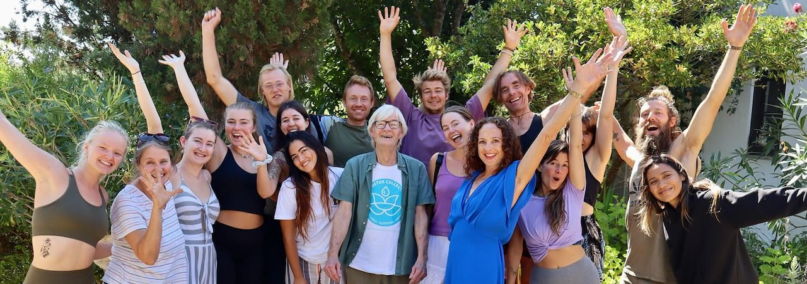

What guests say
Guest Reviews
10 / 10 on Trip.com
Guest-rated for comfort, care and value
Thousands of guests
Welcomed to the valley since 1992
In their words
The review bank
Full reviews, not snippets — every five-star review from Google and TripAdvisor alongside the ones guests sent us directly over the years. Open any card to read the whole thing.
“I booked this retreat out of desperation, I was bloated, riddled with anxiety from the trauma of my past, I was drinking every day and I was in a mess. I loathed myself so much I couldn't look in the mirror.
Read the full review
I arrived at the airport in tears, heavy, tired, hungover and cynical.
I met two other participants in the airport and we made our way to the transfer that had been arranged by the team.
On arrival we met Karen who's warmth and welcome took me by surprise. I was taken to my room on site. Rustic and clean with everything you could need.
I unpacked and realised I hadn't even looked at the view. I walked outside into the warm air and the views were spectacular, surrounded by trees, nature and flowers that perfumed the air....I felt a little calmer.
So then the process started, we had a full tour of the facilities, every nook and cranny was filled with something to sooth and or support.
After a comfortable night's sleep I went to morning lemon tea before our Yoga and meditation session, I wasn't into yoga but all the teachers only want you to do what you feel comfortable with, no pressure, no competition and attendance is advised but not mandatory. I felt great, energised after each session.
Deb took us to the medical to ask some question, put us on the scales (optional but I would recommend), take blood pressure and to have a little chat. Deb is a beautiful kind spirit, understanding and loving without a hint of judgment.
I have past trauma like everyone else, but I struggled to place it out the way of my life now. Karen took me for a session and I went in with an eager, open heart and Karen, using ancient techniques helped me in a way I cannot put into words. Karen is loving, kind, understanding and frankly gifted in a way that reminds you that magic is real!
I also had acupuncture with Richard, again, I felt the effects immediately and continue to do so at home, he's in tune with his art and did a damn fine job.
I had a deep tissue massage with Randy who has a clear understanding of the body and on leaving, combined with the yoga, aches and pains that I once thought permanent disappeared.
Ed! A world class vegan chef made our juices and broths and after 2 days I could taste all the different elements. Ed is a supper hero of flavour and his knowledge is outstanding.
You are also tested and given the supplements you need for the programme.
About 2 times a day we would have a quick talk on things that can help the detox process, from tongue scraping to netty pots (life changing).
Many of the team are published authors and you can read or buy the materials on site. Please note, no pressure is applied to this at all, it is just for people that would like a deeper dive so to speak.
Chris, sometimes taking us for yoga also with the team took us for evening guided meditation, on 2 occasions we took part in beautiful ceremonies, especially one for the full moon (blue moon). It was so much about letting go about love, kindness, understanding. I left floating. Chris holds your heart in his competent hands and loves you till you are completely comfortable and then leads you through the process, constantly imparting personal, beautiful experiences as a way to introduce you to the energies that are around us all the time, if only we listen.
During this time the other guests (14) of us could not have come from more different backgrounds and yet we quickly became very close, feeling free to give compliments, support each other, celebrate each other.
Like any fast you'll have highs and lows, but the pure energy, kindness and well thought out juice and broth routine offers comfort. I can say I wasn't hungry, but my cravings were tapping on my window, but with a quick chat, or some meditation you realise how strong your mind is.
I'm going to skip some bits because you should really go with an open mind and heart, being your authentic self and expectations only relating to yourself and you'll be grand.
In the day if you want peace then you can find that anywhere, long walks in the beautiful surroundings, outside your room on the many sun beds or swinging chairs, in the TV lounge or even midnight swimming under the stars (highly recommended).
If you want company you'll always find it.
On a personal note, I had had tummy issues for 2 years and when I saw the product of the 1st 2 days leave me I could tell why......When they say detox they mean it.
The day I left, having become family with many guests and the team I felt light, I felt happy, I felt my past was where it should have been and I was able to say I'm grateful for it as it helps me to do the job I do. I lost 11lbs and a coach load of personal baggage that was not serving me......I could look in the mirror again.......I left loving my self and feeling the love others had for me.
I cannot recommend this magical place enough. I was there with people who have been going every year.
It's for anyone and everyone, it can be simply for weight loss, it can be to sort through trauma, it can be for a damn good rest.
When you add up the skill, experience and the gifts the staff offer alone I can honestly say they are under charging, then add the stunning food, the surounding beauty and the staff that treat you so utterly beautifully then you got yourself a more than affordable life changing experience. For me it was priceless.
I'm home 3 days now and following the aftercare advice and guidance. I can finally put the past to bed and enjoy my beautiful family and life full of love and gratitude.
Please note, we laughed every day, we talked about everything from personal experiences to what colour our poop was, we were free, happy and not self conscious. Everyone there was on their own journey and when people needed space they could easily find it with no worries at all. We had people crying letting it all go whilst others sat close but allowed this healing to happen, only to later congratulate them on letting that energy pour forth and letting in the light.
Advice from me, don't take too many clothes, just take loose, comfy stuff and none of it has to match, leave your phone in the room and be present, do the yoga, you'll be stunned at how quickly you improve ( I was like a potatoe the first week lol), listen, ask questions, try out the person you know you can be for size and be celebrated for it.
I will return for a top up every year.”
— Glen
“Words cannot describe my stay at Moinhos-Velhos. As soon as the taxi drove down the valley, I felt I had entered paradise. The beauty and tranquillity is unmatched. I entered the stay blindly, I had never fasted before and chose a 10-day fast, which I did not regret. The programme itself: the yoga…
Read the full review
lessons, the meditations and all the additional treatments are world-class. Everybody is so skilled and helpful. Last but not least are Ed's juices which are so unique and tasty. And the evening soup is just delicious and varies from day to day. I strongly recommend joining the retreat with an open heart, to feel the place's flow and rhythm, show up on time to all the sessions and take the additional treatments. This really helps with the mental and physical detox. I took healing with Karen, massage with Randi, and acupuncture with Richard. I had a special connection with Mira and received two massage sessions from her, she is a true angel. All in all, a fantastic experience with amazing people. Thank you, dear Karen, Chris, Debby, Ed, Richard, Randi and Mira. Thank you, Moinhos-Velhos!”
— Thorhildur
“Detox body mind and soul
Read the full review
I just had a week in MV. Detoxing the body and mind that … I was searching for a juicing vacation which was more than just yoga and detox . I’m so luck to come a cross Moinhos Velhoswhere you can shed kilos and connect with your inner self. Meditation, yoga and detox. Run by Wonderful facilitators with extra therapies, from acupuncture to healing and messages. The juices and broth is to die for. Highly recommend MV for anyone looking for and escape in beautiful Algarve. Thank you MV?I will be back…”
— Deniz Y.
“Your entire being will be buzzing and grateful for the investment!
Read the full review
Well, what can I say that hasn’t already been said about this beautiful place?! I’ve been 3 times for 10 day retreats and it’s been subtly different for me each time yet the environment remains soothingly familiar. I feel like I’m at home when I arrive here and also totes emotional when I leave ? I’ve been reflecting on why it has this affect on me and I think that it’s because its such a place of natural peace, energy, love and support that my entire body and mind crave it and then I don’t want it to be over! It reminds me of my joy in owning this body and the value of self love and I leave filled with more power and confidence in myself and raring to go. Invaluable gifts! Everyone who works and lives here plays a part. Thanks a million to Karen, Chris, Ed, Debby, Richard, Simona, Mira, Josefina, Julianna, Esme, Aedin and all who work behind the scenes. Legends! I highly recommend buying Ed and Richard’s books when you leave in order to study the mountain of information given during the retreat, at your own pace. I’m enjoying both immensely. Also, I can now apply suncream by myself to those hard to reach areas on my back after all the yoga and movement. Bonus!! So don’t waste time researching other retreats, just book here. Your entire being will be buzzing and grateful for the investment! ☀️Caroline”
— Caro S.
“I will most definitely be coming back next year :)
Read the full review
Just left the retreat and honestly can not recommend moinhos velhos enough ,me (age 20) and my brother (18) had the most amazing time getting away for a well needed detox from the uk. It was the first trip away from home without our parents and honestly the staff were so welcoming and kind, supporting us throughout with any needs or queries we had. The whole experience has given me a new mind set on spirituality and peace. Me and my brother have left the retreat feeling clear headed and healthy. I will most definitely be coming back next year :) counting down the days ! Thank you so much to the staff at moinhos velhos for setting the bar so high for our first holiday ?”
— Alex K.
“I haven't had this much energy in years.
Read the full review
Last April I entered the juice detox at Moinhos Velhos and it was an incredible experience. I had multiple reasons for going but most of all it helped me stop my smoking habit. This was my personal goal for detoxing. I didn't expect it to be so effective. What a great place, the air is super clean the nature is absolutely stunning and the program Moinhos Velhos offered was super clear and solid. Especially for me the breathing exercises in combination with yoga (and believe me I ma not a natural yoga person:) was of great importance. Following the program you get to be very aware of you body inside and outside. The effect of the fasting on juice was not at all a punishment. On the contrary, it was surprising for me how good it felt not to be dictated by hunger but by feeling what your body really needs. I haven't had this much energy in years. The team is very professional and also light hearted. The additional therapies were great with a special mention for Simone. Best decision I have made in years. Keep up the great work and Namaste!”
— Roel
“Best fasting retreat in Portugal. Look no further
Read the full review
It was the best experience ever. I really did not know what to except, and we were pleasantly surprised. I really wanted something to just reboot my immune system due to my health. I received more than just that. Daily meditation was a treat., it really helps with slowing down your mind and letting go. I do recommend this retreat detox in Algarve. The staff was extremely helpful, experienced and loving. Karen and Chris are a lovely couple to guide you through this whole process. If you like Thai style massage, Deb is the one - my husband really enjoyed it. I had a Swedish massage every day. Ray was the best. Since we already know from the outset we’re fasting, Ed, the vegan nutritionist and chef will become your best friend with amazing juices and super delicious vegetable broths ?. If you’re searching for a real mind and body reset, look no further. The Moinhos Velhos Retreat is a magical place. ⭐️⭐️⭐️⭐️⭐️ We will be back ?”
— Ingrid R.
“Amazing detox retreat in a beautiful nature environment
Read the full review
I did 7 days detox retreat and I loved it. The team is amazing and I felt taken care of from the booking till the departure. The place is beautiful and you feel the calming energy as soon as you arrive. I especially appreciated the spiritual aspect of the retreat, the nature, the passion the whole team works with and the care we got during the whole retreat. The program is structured in a perfect way to makes the detox process smooth and enjoyable. I will come back!”
— Katerina K.
“Felt incredible afterwards, so energised physically and mentally, like I could do anything
Read the full review
Can't fault this 10-day detox retreat. Stunning location, incredible juices and broths, and such a beautiful attentive team on hand to support you in whatever way you need, each with their own particular knowledge, training and skills. Felt in safe hands: with more than 30 years in existence, this is perhaps more professionally run than other juice that offer luxury accommodation. The attention to detail - from the beauty of the juices and the flower decorations to the provision of everything little thing you might need - was amazing and much appreciated. Numbers are kept deliberately small - there were 12 of us - which only adds to the experience. There is a spiritual aspect to the retreat, which is rather lovely but it's not forced and you're free to join in with whatever you wish, or not - morning yoga, meditation, a led dance/movement workshop or fire ceremony, and of course amazing massages and other treatments are on offer if you want them - which I did! Chris and Karen give off such a warmth and humour, we had lots of laughs along the fasting way :-) Fabulous time of year for wild flowers and walking. Also great to have a pool for a (quick) dip, and a sauna. Wasn't sure how I'd cope with nine days without solids, but I did it, and it was surprisingly enjoyable! After the first couple of days where I felt really tired, my energy picked up and I rarely felt hungry. Supplements including psyllium husk are served with the pretty amazing juices and broths, which the lovely Ed spent hours preparing (he also gave really knowledgeable and useful daily nutrition talks). Felt incredible afterwards, so energised physically and mentally, like I could do anything. The team also carry out a before and after health check and prepare you for life afterwards. I hope to continue with something of what I learned - and to return!”
— Nicky G.
“Life changing experience in a beautiful sanctuary
Read the full review
We had been looking for a yoga retreat and had been recommended MV - we were really worried about the idea of juicing but decided to embrace the idea and go for it. It was the most incredible week - starting with gentle yoga that built up over the week, fabulous morning walks to watch the sunrise and we soon really enjoyed the fresh juices made from many of the fruit and veg grown at MV. The team were so kind, friendly and knowledgeable and we all came away on the most amazing natural high that we did not think possible. I would highly recommend coming either with friends or solo. We have all come home feeling nurtured and caed for and ready to make some changes to our lifestyle - amazing the simple things like listening to more music, use a watch not a phone and some super simple hints to change eating habits towards a more plant based diet. I did not think I needed to lose weight but a few pounds have been shed and I feel so much lighter in spirit, mind and body. It is a bit bonkers mad at times...but go with the flow and have a ball...we have laughed, cried, walked, swum, saunaed and massaged, chatted, slept, danced, made new friends and had so much fun! Hasta La Vista! xxx”
— MelDowning
“A detox at Moinhos Velhos is a truly gift to myself and I wish everyone could do it! I have experienced a detox of my body mind and soul in this piece of paradise called Moinhos Velhos, with a highly experienced team who has a deep knowledge and wisdom of how to guide me and supported me during this…
Read the full review
process. The juices were delicious, the yoga and meditation classes in the yoga temple were magic! The treatments were amazing and one in particular, the Thai massage of Ed van Tegelen have help me feel release of a chronical pain I have in my left foot, really the best Thai massage I ever had and I’ve done massages in India, Bali, Sri Lanka and many others countries. I’m so very grateful to all of you at MV for helping me purifying my body, healing and lightening up my soul again. Namaste!”
— Vera Mauro
“The most amazing stay of my life!
Read the full review
To be in this paradise-like environment, surrounded with love and care. A detox to surpass all others. I got home a few days ago and am able to maintain the good habits and feel amazing!! So grateful to have been there.”
— Uma
“Eerything was perfect
Read the full review
The setting is perfect. The yoga instructors were very professional. Everything was perfect. I’ve been back 10 days and I’m still feeling the benefits. The staff were warm and welcoming. There are lots of treatments on offer. The swimming pool and sauna were fab. My room was very comfortable, private and quiet.”
— Theresa M.
“The whole experience was fantastic
Read the full review
This was my first time at MV and I shall never forget it. We had the most wonderful practitioners who share their time and valuable knowledge generously, the juices were fantastic , the yoga accessible to everyone and the therapies fantastic. The whole experience was outstanding in the company of other wonderful guests taking their own detox journey. I feel totally rejuvenated and mentally and physically rebooted. The sky was blue and the sun was shining - what more could I ask for?!! An experience to treasure and share”
— Lindalucas
“Got home yesterday from this retreat and loved it so much I had to stop myself crying when I left. The whole experience was beyond amazing the facilitators go out of their way to help and their knowledge is incredible. A very special and unique place, loved everything from the comfortable room I…
Read the full review
stayed in to the people the yoga, fasting, ceremonies, gong bath, mediations, the stunning walks and therapies. Loved it all!! Will be raving about you for a while. Such a loving place! I feel amazing thank so much again!! Will be back for sure Love lisa xoxo”
— lisa burns
“Loved it all !! Will be raving about it for awhile
Read the full review
Got home yesterday from this retreat and loved it so much I had to stop myself crying when I left . The whole experience was beyond amazing the facilitators go out of there way to help and there knowledge is incredible. A very special and unique place loved everything from the comfortable room I stayed in to the people the yoga, fasting, ceremonies, gong bath, mediations, the stunning walks and therapies. Loved it all !! Will be raving about u for a while. Such a loving place ! I feel amazing thank so much again!! Will be back for sure Love lisa xoxo”
— Storyteller598439
“We had a wonderful time on the Moinhos Velhos juice detox retreat. From beginning to end the whole experience was incredibly nurturing and regenerative. Chris, Karen, Richard, Debby, Ed, Ivan and the entire team took great care in looking after us as their guests. The depth of their experience and…
Read the full review
passion in providing these retreats is evident. I’d experienced one other detox retreat before in Thailand, and I found the Moinhos Velhos program to be far more comprehensive - with daily talks and sharing on nutrition and detoxification practices, morning yoga and evening meditations, use of zappers, QRS machine, sauna, swimming pool, library and a choice of expert therapists to receive treatments from. The location is stunning, with the retreat property situated in a beautiful, secluded valley surrounded by nature. The weather, being the Algarve, was great as ever. The yoga each morning gave a great start to the day, the juices and broth’s were delicious. The whole program was structured in a way that made the entire fasting process comfortable and relatively easy. If you want to invest in your health and wellness, Moinhos Velhos is a perfect choice!”
— Alan (via Tripadvisor)
“This was my second visit to Moinhos Velhos having done a 10 day detox in 2019 which I had found incredibly beneficial. I particularly like this program as it fully integrates a retreat, a detox, a spiritual experience, with the treatments, yoga, guidance, talks in a very caring, professional…
Read the full review
environment. It is very peaceful, the team generous with their time and advice, the juices delicious and fresh from the land, beautifully presented. The team really walk their talk and have in depth knowledge of the process doing it week in week out. There were 15 of us on the program. At all times I felt entirely free to do what best suited my detox journey, whilst being supported by others. A lovely variety of things to do or just to relax. I didn't experience any hunger, felt the cleanse was deep and came away after several outstanding treatments feeling thoroughly refreshed and alive. A real find which I will definitely return to. The team really do bend over backwards to make your stay the best it can be and offer some profound wisdom and teachings. Huge gratitude to them.”
— Sesame (via Tripadvisor)
“This was our second visit to MV, would have been 4th if it hadn’t been for Covid. Anyway, my Wife and I were in desperate need to relax , detox , unwind and lose some “lockdown lard”. The team here are the best in the world from practitioners , to admin staff, caretaker, cleaning staff… was simply…
Read the full review
impeccable. The yoga sessions caters for all experience levels and there is no stress or embarrassing situations .
If you're looking for a holistic approach to get to a healthier and happier place then this is THE retreat to visit. Immerse yourself in all that the team and facilities and therapists AND beautiful location have to offer. We are already planning a spring visit!”
— Vittorio (via Tripadvisor)
“This is my second visit to Moinhos Velhos. I loved it the first time and I loved it the second time. The location and grounds are so beautiful, peaceful, natural and calming. The juices are varied and delicious. There is 2hrs of yoga every morning, if you want it, and 75 mins of various meditations…
Read the full review
and spiritual ceremonies every evening. You can also sign up for additional treatments (at extra cost). I did acupuncture with Richard again as it just really works for me (I don't understand how, I just know it does!)
I also had an excellent massage with Anne. And I used the steaming hot sauna as much as I could (this was arranging on an allocated solo slot basis due to covid). The various animals around the grounds were lovely company (the chickens were hilarious!). The rooms are fairly simple / average but they are clean, comfortable and spacious, and the outside space is so glorious that it doesn't really matter what the room is like.
The staff are such kind, pure souls who genuinely want to help people feel happier and more content with their lives, and they are dedicating themselves to creating and maintaining a space in which to do that. How amazing is that?
I just love it here. I always feel healed and healthier. I will go back again.
I see there are two 1star reviews here, and note that they are both from many years ago. Going on a fast and sticking a tube up your bum won't be for everyone!! If you are tempted, don't let those reviews put you off!
I am writing this over 3 weeks after returning and I am still eating mostly plant-based, non processed food. I've been sleeping better / regular hours, and feeling much calmer, happier and more centred in my life. Normally after a holiday it takes about 2hrs of work for me to feel horribly stressed again, so 3 weeks in and still going strong is incredible! Thank you to the whole team at MV and I hope to see you again really soon xx”
— Claire (via Tripadvisor)
“Having detoxed before at retreats in Thailand, I had a certain expectation prior to my arrival at Moinhos Velhos. Their website looked promising. The staff was responsive to my pre-arrival questions. I was comforted there were similarities to my previous fasting experiences. It truly didn't take but…
Read the full review
a day into the program to fully realize that I had hit the detox/retreat jackpot! After just completing the 7 day juice fast, I left inspired, enlightened, and empowered. I am confident that I can now make some positive changes in my life thanks to the guidance and support from the retreat team.. I can't praise the staff enough for their wisdom, knowledge, and dedication. The sense of community is incredibly beneficial here. The delicious juices and broth are always enjoyed as a group, and often followed by talks centered around nutrition. The daily yoga and meditation are an essential element to the program and absolutely helped me achieve that re-balancing and total reset I so needed. The setting is simply beautiful. The gardens around the main reception house, pool, temple, and guest rooms/cottages are filled with an abundance of fragrant plants, flowers, and trees. I enjoyed daily walks/hikes in the surrounding countryside as well. If you're considering a juice fast, you will certainly be doing your body, mind, and spirit a world of amazement should you choose Moinhos Velhos!”
— Gavin (via Tripadvisor)
“This was the first retreat I have ever experienced. I was a bit nervous about the "menu" since I normally eat often and a fair amount. However, the juices were delicious and the supplements made it possible to not feel hungry. The staff was incredible; everyone was open and available and kind and…
Read the full review
fun. The daily yoga and meditation sessions were very enjoyable, interesting and relaxing. The rooms were very clean and the bed was comfortable (and firm). The setting was gorgeous and the birds were plentiful and delightful. Surprisingly, I lost close to ten pounds and I was not even considered overweight! Furthermore, I have modified my eating and exercise habits after returning to continue to feel as great as I did when I was at the retreat!”
— Christina (via Tripadvisor)
“I loved it here, if you need a re-set, a re-think, some space and time to come alive again in a supportive, genuine, good hearted, kind environment you should go...one of the best things I’ve ever done for myself. It’s also beautiful! A very special place”
— Ruth (via Tripadvisor)
“This place is superb. The staff are incredible and are always available to talk to, to offer encouragement, support or advice when needed. This was my 3rd visit to Moinhos Velhos and it won’t be my last.
Read the full review
It’s not just a juice retreat to me but a spiritual haven. It’s a magical place that has the most amazing energy to it. Probably helps the surrounding mountain has clear quartz crystals embedded into it and the views are to die for.
The juice fast is really enjoyable but I also love the yoga in the mornings, followed by a lovely treatment - there are so many to choose from. If I fancy a dip in the pool I can or I can have a lovely walk around their grounds. 16 hectares to be exact.
If you want somewhere to go where you can shut yourself off from the outside world and have time away to reflect and re-energise then Moinhos Vehlos is a must.
I have just returned home 7 pounds lighter and feel so healthy. Can't wait to return!!
Really can’t recommend it enough.
Thank you to Karen, Chris, Richard, Debby and Ed”
— Lucy St Ledger
“There wasn’t much not to like on this retreat. I have attended many yoga and meditation retreats and I can honestly say this was one of the best. The quality of instruction and shared teachings and knowledge from the varied backgrounds of the staff is superb. Every niche seems to be covered by one…
Read the full review
member or another. You feel very cared for and held. The program is very well researched and delivered confidently with nutrition and detox knowledge by their nutritionist and other members.
The holistic treatments offered widely vary and you can choose the support that fits you best. I particularly loved Richards acupunture and his 5 element approach and sharing of how it works on the many layers of our being. I found after my sessions with him many dreams that seemed to deliver “aha” moments and give me greater insight and wisdom into my life and left me feeling like my heart was more open or less in protection.
The whole program together I feel created an opening that just yoga and meditation alone seemed not to do in past retreats. There is something magic about blending the juice detox and that sense of being cleaned out that opened my wisdom vision in a clearer way and I left feeling more flexible than I had in a couple of years and that remains till today.
The breath practices everyday also helped cleanse and my sinuses and respiratory system feel much clearer now. The place is also gorgeous and I highly recommended sitting near the lake for it’s peaceful stillness.”
— Angela
“Delightful location with lush green hills, gardens, pleasant walks, buildings that fitted the rural setting, pure delicious water, facilities such as swimming pool, sauna, hot tub, temple, clinic with a fascinating library, delicious freshly-made juices, excellent yoga instructors each morning, and…
Read the full review
health practitioners with genuine expertise and a variety of interesting healing techniques that were instructive and seem to have worked for me.
I was pleasantly surprised, for example, to find the amazing Physiospect in use (I'd just been introduced to one in my home town - the first I'd ever encountered) and other techniques I hadn't expected on a detox retreat. All this and excellent staff support throughout. A very congenial group of people during the week was another fortunate highlight. Greatly to be recommended if you are interested in health.
Be prepared for some steep hills within the property and some challenging yoga workouts (although the instructors are all charming, flexible and helpful, so you don't need to be super-fit from the start: you will certainly feel fitter by the end of the week!).”
— Barbara
“Peaceful place, with good installation (swiming pool, sauna, jaccuzi) Some nice walk to have around in the country or to the sea. The team is available, give good advice and give a good coaching. Yoga coach help you to improve yourself. It's a really good break with a well thinking program. That I recommend it! Merci”
— Frederic
“Dear All Hope everyone is still feeling fab. I have managed to stay off the fags and have kept the weight off (exactly a stone) although it's time to really go for it and lose the next one now! My e-mail account had been frozen so this is the first time I've been able to get on-line. It has been…
Read the full review
less than a month since we left Moinhos Velhos but already it feels quite a distant memory to me.
I realise that now we are back in civilised world there are certain taboos, but quite frankly I've mised our talks! When I went to Glasgow for my colonic, the practitioner said she'd never seen a colon as clean as mine! There was absolutely nothing in there, hardly even changed the colour of the water as it came out.I was glowing with pride! (I really must stop boasting, it,s just that I have had no one to share this with!) I hope Hazel's appointment went well.
Tony and Renee - I trust your extra couple of days in Portugal were enjoyable (I can see you've sent a mesage but it is taking ages to access my inbox so i will read it later tonight) and that your builders had made good progress while you were away. I have my eye out for an Eddie Izzard video to send you!
Tricia and Boo - hope all is well and will e-mail son as the library is about to close - no telephone line at my new place yet.
Lots of love to you all - or love and light as I've taken to saying
Harriet xxx”
— Harriet
“The oasis you both created here has been the ideal place for me to do my yearly fasts. I have been fasting for many years on different programs and different places, but the program you both developed gives excellent results. As long as I will be able to come to your place, I'll come and stay with…
Read the full review
you. I have just finished my 3rd detox program at Moinhos Velhos and feel rejuvenated and clear minded, ready to start my busy life again. Thanks to you both.”
— Leon
“Our stay at Moinhos Velhos was a time to heal body & soul. Crystal light penetrated into the shadow of our being, opening the way back into balance & harmony. We thank Frank and Anne Karine for their support and I thank my higher Self who guided me here to rediscover a Paradise lost!”
— Caroline
“Moinhos Velhos was a breath of fresh air among detox & yoga retreats! My 7 day retreat was so uplifting , its rustic charm, daily yoga practice, which was the best I have ever experienced, organic gardens, and daily juice, joy & laughter, poolside fun, new friends, & all the staff, plus the resident…
Read the full review
dogs, made my retreat week, a little piece of heaven in all the stress of life. Thank you so very much, for all the kindness and care.”
— Stormfree
“I can’t thank everyone at Moinhos Velhos enough for the care and kindness they showed each of us. We had a wonderful retreat - the 10 days allows you to go deeper. This is not just a physical detox it’s a mental, emotional and spiritual one. Everyone looked so well and so peaceful at the end.
Read the full review
There are gardens where much of the fruit and vegetables are grown for the juice - including the oranges, and there’s a walk nearby down to the dam (the only drawback is there’s limited amounts of different walks but they are beautiful and there is a trip to the coast included too). I was a bit sceptical before I came but extremely run down and Moinhos Velhos was just what I needed. It cleared away years of stress. This is not a superficial materialistic experience - it’s very comfortable with fires in the sitting room, sauna, hot tub and a lovely fresh pool - but it also has a spiritual aspect too with the yoga and chanting that provides a helpful focus and the teachers are wonderful. When I left at the end I felt like I’d left a community, not just a retreat.”
— Sophie (via Tripadvisor)
“I just completed a 7 day juice fast (my first ever fast) this October. After being recommend the retreat from a friend who has been attending for 5 consecutive years for the same psoriasis issues as me, I thought it was time to really attempt to reverse this skin issue I have suffered with for 8 years.
Read the full review
The resort is beautiful and authentic and this radiates through to the owners Frank and his wife Janni. Alongside their trusted management team Mel (mother goose), Debby & Ed.
The therapists Trixie (massage) and Christelle (reiki) were fantastic, not too mention all the yoga by Debby (what a great intro into yoga and thanks Debby, Jana, Christelle and Chris) and the nutrition lessons from Ed. Please note Ed also has a fantastic sense of humour so feel free to engage with Ed as he really does keep your spirits up during an emotional journey. Thanks Ed! It must be the Dutch in him.
I have already started to see some small changes in my skin and this detox has given me the kick start I needed. Alongside reading a book by Dr John Pagano. Highly recommend for eczema sufferers too.
The group I shared the week with were all friendly and supportive which made it really lovely. Essentially the family spirit stems from the top all the way down and you feel like you are staying in someone else's home or even your home. That's how welcome you are made to feel.
I will return probably on an annual basis. It was great to let the mind and soul also cleanse.
Eternally grateful for the experience.
A few of my highlights, the lake, the lessons, the pool and sun, and the yoga! The juices are also filling and lovely.”
— Laurie (via Tripadvisor)
“My overall experience at MV was fantastic. I needed a break from life; needed to rebalance and re-centre, and some time away to reflect and re-energise. Plus I was constantly dealing with the ups and downs of my IBS and wanted to take drastic action to try and address this. MV provided all of this.…
Read the full review
From the 7am wake up calls, yoga, juices and meditation plus the talks on nutrition, diet and overall wellbeing, I got to reflect on that I was not being as good to my body as I possibly could have been.
The treatments were great- thank you Trixie! I feel that throughout the week I was there i had total cleanse. I did not feel hungry throughout the week. I did however cut down on the caffeine, sugar and meat the week before which I think helped as I was not dealing with the headaches during the week.
I absolutely loved the Biodanza session. It was such an opportunity to let go and realise that you can have clean fun. This really was the kick I needed - I have more will power now.
2-3 weeks on and I am still not wanting to stuff my face with sugars and refined carbs, alcohol or caffeine. I am eating much less meat overall and trying to stick to a routine. I have incorporated more yoga and meditation into my schedule too.
Overall the place is lovely and clean. The rooms are basic but they do the job. The rooms are cleaned/tidied most days and fresh towels changed at least once during the week.
I have managed to keep off the 9 lbs that I lost whilst there, even though my main aim was not to lose any weight. I have really got a more positive outlook overall.
Thanks MV and the great team that guided me and the rest of the group that week.”
— Danni (via Tripadvisor)
“Moinhos Velhos is a stunning place, located in a remote, and very beautiful part of Portugal that you may never otherwise get the opportunity to visit. I had a difficult year in the months leading up to this retreat and I knew I needed to pay some attention to my mental health and try to rebalance.…
Read the full review
This is the perfect place to do just that. Moinhos Velhos is a beautiful setting, totally unspoiled, and living as close to nature as possible, in beautiful peaceful surroundings. The accommodation is clean and comfortable, but it is the people, the staff that make this a truly enriching experience. I spent 7 days there and I can safely say I did not find it difficult, quite the opposite. You're never hungry while fasting, and you have so much to gain and resources to put back in place to face the world again. The juices that are prepared every day are all from fresh, seasonal produce, and are delicious. I lost weight, but that wasn't my main goal. My mind benefitted the most. Aside from that I also left with a very clean colon and a sense that I had left a lot of other baggage behind also! I will never forgot this very special place and will most definitely come back one day. Thank you the very dedicated team Debby, Ed, Mel, Trixie, Chris, Anne and Sarah especially.”
— Anita (via Tripadvisor)
“Thank you both for having made Moinhos Velhos and letting us share it with you. I feel lucky in having been here and feel it has changed my life. I will definitely be back. PS. Until now I didn't believe it was possible to feel so wonderful without eating for 7 days.”
— Angela
“I arrived 10 days ago at Moinhos Velhos, exhausted, full of toxins and completely living on my reserves. I leave today feeling absolutely fantastic . I have waited years to do this and I can honestly say I have enjoyed every single minute. The treatments have been incredible. There aren't many Anne…
Read the full review
Karine's and Frank's around. See you next May.”
— Judy
“What an experience!!! I have never lost so many kilos with so much fun and so little hunger. This is such a lovely place. I thank you for your caring, and I shall be back soon.”
— Doris
“Fasting for me was a truly enlightening experience, and contrary to my initial beliefs it was amazing that it was rare during the 10 days that I felt hungry. I came feeling stressed and toxic!! And left feeling so relaxed, at peace and clean. Thank you Anne Karine & Frank for all your support…
Read the full review
throughout my stay. Being here has taught me again to enjoy every day!”
— Jennifer
“Moinhos Velhos is tranquil and beautiful, located very high up in the hills away from all the noise and distraction. I was feeling burnt out, unfocused, spiritually drained and tired of London life and my eating habits were atrocious, I was recently made redundant from a job that I had been in for a…
Read the full review
long time so I needed to escape to somewhere where I can detox mentally and physically and to find out what was going on with me. I wanted to reconnect to my inner being and put my life in perspective among an oasis of calm. This is where Moinhos Velhos came in, beautiful almost sacred ground as you walk through lush vegetation and to smell and admire the beautiful array of flowers sprawled throughout left me awestruck. The accommodation is basic but clean, simple and comfortable and the staff are without a doubt the most passionate bunch I've come across, they really care for your well being and the body massages..OMG! AMAAAZING!! I spent 10 days there and I found my love of juicing, meditation, yoga and silence. I lost nearly 9lbs in weight, my mind and thought process are crystal clear and I felt like I had reconnected to myself again. A part of me was left behind as I was heading back to the airport after my stay, but every now and again I glance down at the little note where I had scribbled various messages where I had made a pledge to myself on the things that I will continue to do when I return and I secretly smile to myself. I will never forgot this place and will most definitely be returning to continue my journey. Thank you Mel, Trixie, Anne, Ed, Debby, Chris & Jaclyn.
Dawnet xxx”
— Dawnet (via Tripadvisor)
“Moinhos Velhos is an incredible place. Set in a beautiful valley just outside Lagos with a resevoir nearby. My time there was completely nurturing and nourishing. I did a two week juice detox and came away feeling so good. I was relaxed, lost over a stone, I felt flexible and fit after doing…
Read the full review
Sivananda yoga every morning and meditation every evening. plus outings to the beach, mountains and salt cave. We had lots of tips of how to continue in everyday life. Plus some amazing ceremonies including an Agni fire ceremony. The staff are lovely, professional and so caring. I'd thoroughly recommend it.”
— Christine Fireheart (via Tripadvisor)
“I’m not going to repeat other reviews describing accommodation, juices, facilities. Already mentioned by others and accurately described. For me there are 2 major factors which make Moinhos Velhos a little piece of Nirvana. Firstly, it’s the people who work and volunteer there. Secondly, it’s the…
Read the full review
distracting beauty of the natural world there. Waking up to the bell ringing, the birds start their music, sun peeps over the valley and the wind moves the trees and chimes and the place comes alive. Trees, flowers, sound of water flowing, the animals of M.V. cats, dogs and the garden. All make it special. At night the moon and stars take your breath away. The people there make it a caring, safe, loving, fun and enjoyable way to make such major changes to your life. Teaching and guiding without patronizing. Available for advice and chats but also allowing you space. Huge thanks to Christelle, Debby, Ed, Mel and to Sefora, and to all the volunteers. Hope to meet again for my 3rd visit whenever the time is right. Xx Caroline”
— Caro S (via Tripadvisor)
“Just spent ten days here in a bid to feel healthy. You only drink fresh organic juices, which are amazing (pear and cinnamon, apple and ginger, cucumber and mint - lots grown in the vegetable garden) plus a strange concoction of Bentonite clay and physillium husks to “push things through”. No Food!…
Read the full review
Yoga and meditation every day was great. Anne was fantastic for massage. Pretty and rustic surroundings with a nice salt water pool (too cold to swim in Jan),sauna and hot tub. Simple but clean and warm rooms with nice bathrobes and towels. Central areas had wood burning stoves which kept them warm on the cold January nights. This is not a fancy spa. Come if you want a proper body and mind detox in a warm, caring environment with a small group of people (up to 12 stay at one time). Lost weight, skin glowing, clear mind. Feeling good.”
— Jo Johnson (via Tripadvisor)
“I absolutely loved my experience at Moinhos Velhos. I didn't know what to expect, or what I got myself into really! But the beautiful team there made it SO easy, fun, enlightening and of course CLEANSING! You will feel so amazing after. Get yourself there and immerse yourself in the learning and…
Read the full review
relaxation :) I gained so much more understanding about my body and clarity of my mind”
— Catherine (via Tripadvisor)
“This is a brilliant place. For fasting it is ideal because of the depth of their experience of doing this over nearly 30 years, and the commitment of the team to making sure your stay goes well. It is also an incredibly relaxing and beautiful place to retreat from the madness of the world and detox…
Read the full review
from screens etc too.
It is not just about fasting and not at all about losing weight (although you do), but about restoring some health to your body.
And, as science research is now also showing but as we have all known for long, the mind and spirit do not function well when the body is not, so the impact after just a few days of this fast on the mind and emotions is startling.
Added to this, the (optional of course but included) 2 hours yoga and meditation (very well taught), beautiful gardens, long walks, and visits to empty beaches, and you come away with more freedom from the prison of one's mind, a desire to instil new habits, and in my case, a lot learnt.
Accommodation is simple and very clean; beds would benefit from new mattresses or new beds, but otherwise very adequate.
It would be nice if prices kept down given Europe's deflationary environment of these last few years.
The team working there is a mix of the owners (sprightly octogenarians), employees and volunteers, and have a lot of knowledge on all aspects of health, yoga etc, and the mini nutrition lectures over a juice are useful.
Highly recommended”
— Mark C (via Tripadvisor)
“Just a note from wet, gray, sheep killing little olde England .... I am fighting the good fight to keep inside me all the wonderful experiences gained from my stay at Moinhos Velhos. It was the most amazing experience I have ever had in the whole of my life (and my life has not been without…
Read the full review
colour!!) Thank you all for your care, your experience and your time. In every respect I (and even most so, if that is possible, Chrissie) have benefitted.
My knee operation went off like a dream - I am also skipping about already. Most interestingly my blood pressure was very low. Even when I went in (like 105/50) normally 110/60. We put that down to all the yoga and meditation . It did dip quite a lot more when I came back from theatre and hung about at sort of death level i.e. 65/35 for a few hours, but the fact that I was sitting up munching into my hospital vegetarian meal with gusto, sort of assured the nurses I wasn't dying. Probably I was on my way to some sort of samsara. The anaesthetist was most interested in the fast and is thinking of sending his wife, who is an opera singer, off to do one!!
Chrissie, bless her little pink lips, having never done yoga in her life, has now found a yoga teacher and is setting up classes in her home every week. She, of all of us, sort of turned into a living miracle. She has not had to go back to any of her medication and has astonished her friends and family by her transformation. She is going to come to me once a month and do a day of yoga, juicing and a bit of massage!! Well, I suppose you get many many letters of thanks and praise, so do please add this to your list. Just so everything can't be too perfect, I will add a little plea for others following me, for variation on the afternoon juices. I used to love carrot juice - now I am not sure I could ever have another carrot (or even apple) in my life.”
— Frances
“My goal at MV was to lose weight, to feel good and put the bounce back in my step.
Read the full review
I returned home two weeks ago from MV and have waited this length of time before writing my review for the simple reason that after my 14 day fast I felt so wonderful and energised that I decided to carry it on for a further 7 days at home, bringing my total fast up to 21 days!!! It is unbelievable to think that I was not at all hungry, I broke my fast at home following the careful instructions I was given on leaving MV.
Prior to going I had been house bound due to a broken foot, I spent a very sedentary 3 months at home eating too much and almost no exercise at all, so when spring time arrived I knew I needed a holiday and it was a friend who had been to MV who suggested I go and have two weeks just getting myself back up to par. This was some of the best advice I have ever listened to.
MV is a heaven situated in 26 hectares of lush natural woodland,beautiful trees and flowers set the scene for a truly tranquil yet invigorating experience. The day starts with yoga and meditation followed by as many or as few treatments you wish to take, there is a sauna, hot tub and a salt water swimming pool to use any time you wish, and wonderful walking country.
There were 10 of us, a mixed group, everyone came on their own and had travelled from all over Europe and Canada. Throughout the day there are delicious juices made from organic fruit and vegetables which are all grown in the grounds and in the evening a clear broth/soup. The staff are all very knowledgeable as well as working with us they gave talks on herbs and spices to enhance our food, they talked about health and well being, how to relax and listen to your body, which if you are like me never found the time to do this before I came to MV.
Frank and, Anna Karine started the retreat 28 years ago Janni has since joined them 10 years ago, they are dedicated to this belief of juice fasting along with their enthusiastic and friendly team of instructors and health specialists.
This was more than an experience it was life changing for me. I lost 5 Kilos and walked away a new woman.
Thank you all so much.
Sonia”
— Sonia (via Tripadvisor)
“5 star. If you are in two minds whether to do a detox and book this place, don't hesitate. Just book it! Its brilliant. Imagine a detox in a place that is like Kew Gardens combined with the Centre for Alternative Technology, but with wifi, and all mod cons. The gardens and pool are fab, the sauna…
Read the full review
and hot tub great, staff are super helpful and non judgmental, and caring and warm.
I gave up cigarettes, alcohol and caffiene here and had some weepy days as a result, and the staff just gave love and patience in abundance..... i left feeling 20 years younger, more flexible, healthier, better posture, better everything... so go for it, youll be surprised how good you can feel when you get off the hamster wheel and pay your body and mind the attention it deserves....”
— Nathalie Stevenson
“We have just returned from MV following what for me, as a newcomer to the world of detox/ retreat and for my wife a meditator retreat-ant and yoga practioner of some years standing, was a totally life changing and enhancing experience. From arrival to departure we were enthralled by the team, the…
Read the full review
surroundings and the amazingly beneficial and therapeutic content of the programme. Spending time with staff and other guests from countries far and wide all focussed on improving health, physical and emotional wellbeing and being so well supported through the programme was simply superb. The place has a real tranquillity, calmness and positivity about it and was quite probably the friendliest and most genuine place I have ever been. With the help of the whole team at MV we achieved all the personal goals that we set for ourselves prior to arrival and the energy and positive mental attitude that it left us with as we return to real world is great and we are sure will be enduring. The home grown and pressed juices and the supplements were lovely and highly beneficial . The big worry for many I'm sure who are new to this would be the clysmatic self administered colonic flush undertaken daily but I can honestly say don't worry at all it is easy, comfortable highly effective and made for quite a laugh in detailed discussion at the " dinner " table. The social interaction with interesting, like minded and hugely diverse range of people along with the various therapies on offer at a very good price from excellent, experienced and skilled professionals ( accupuncture, reflexology, lymphatic massage reiki etc etc ) added immeasurably to the mainstream detox activities. The opportunity to experience the Physiospect NLS biofeedback system in sessions offered here was both informative and beneficial. It has left us wondering why we hadn't been to MV before and certain that we will return next year.
In 2016 MV was in the Times top 10 detox destinations in the world and rightly so, it provides a superb juice detox experience and so much more. Thanks to all at MV you are amazing each and every one of you. J&J”
— Jan L (via Tripadvisor)
“This is my third visit in six years, a program at MV is the best gift you can give yourself, amazing place, amazing people, you leave feeling like a new person! It is an emotional experience as well as a physical one, this is a very spiritual place that has been running this program for thirty years…
Read the full review
now, it is not following some new juicing fashion but is based on the deep belief and philosophy of its amazing founders...”
— Anna M (via Tripadvisor)
“This was my first detox at MV and while i have done a fast before which was a little different this was a great start into detoxifying, There was a Medical check in the beginning and a weight check which i was looking forward to at the end.
Read the full review
There was talks every other day about important key points about different effects of stress with concern to food and nutrition
The staff were great to be with and if they have people like that with them again be sure to be as good as it was
The only problem was that this was thew first time they were taking people over different time periods there were a few people doing three week two week and one week so the meditations and talk that were done had already been done but i was told that was not going to be done again
All in all this has greatly effected my quality of life and and great for the price and i'm sure that will be of similar quality in the future if not better.”
— Johnathon R (via Tripadvisor)
“I just wanted to send my most sincere Thank You for everything during my retreat at Moinhos Velhos. The impact that I have experienced has been absolutely incredible. And, it is not just my own personal assessment, but my psychologist is amazed at the transformation that I have gone through. She…
Read the full review
hadn’t seen me in over four weeks. Yesterday we had a session and I shared everything from my experience at your retreat. Dr Eve was impressed at how comprehensive the program is and how effective that it was on me.
Every morning, I now start my day with a mug of lemon tea because I recognize how it helps me. About thirty minutes later is when I do my yoga which now exceeds an hour, easily. And, thanks to Ella, Helen and Richard for improving many of my asanas which I was stuffing up. This is then followed up with a deep 20-30 minute meditation. This regimen has helped me have this incredible level of energy.
I have adopted many of the dietary recommendations especially eating a very healthy breakfast. My skills at preparing interesting vegetarian meals are rapidly improving. You have inspired me to push myself to develop this to the maximum. The only area that I regret that I did not explore when I was at Moinhos Velhos is the juicing aspect. If you could recommend the most effective juicer, I believe that I can take it from there. Thank you.
Finally, I want to thank Richard especially, for the candle ceremony, not just once, but for the two times. The impact that both of those had inside of me is indescribable. I replay both of those inside my mind every day. The effect of those two ceremonies continue to “work” inside of me. And, I have helped it all with my acquiring Snatam Kaur’s Live In Concert and The Essential Snatam Kaur cds. I have played my guitar along to Ong Namo (live version) and Ong Sohung numerous times, almost to the point of bleeding finger tips. I am using The Essential Snatam Kaur when I am practicing my yoga. So, thank you Richard and Helen to introducing me to her work. Her music most certainly has helped my soul in magical ways. It is so much like the chanting that I do at the Siddha Yoga meditation center, where I was last evening.
I would like to wish all of you, and the staff, a most joyous Christmas and a very positive and prosperous New Year. Looking forward to when I can return to Moinhos Velhos for another visit. I hope that it is very soon!
with Peace and Love to all of you.”
— Dale
“I wanted to thank you personally for taking care of me during my stay in Moinhos Velhos.
Read the full review
The changes were subtle at first and as the days, weeks and months went by I realised a transformation had taken place. Maybe also with the spiral ceremony… I no longer burst into tears when looking at my brother’s photos or when something reminds me of him. It is more peaceful in my heart and I am convinced you helped that happen. So a huge THANK YOU.
I jumped right back into “life” after Moinhos Velhos (MV). It gave me strength to go forward with a few things that were weighing heavily on me. Although it has been a rocky road, taking up much of my time and energy, exercising, mediation, and juicing have been a bit sporadic to say the least, I have been keeping it up all the same a few times a week.
MV enabled all of us in some way to make big life changes and it’s great to see!
Take care Have a nice week end Big hug xx”
— Amanda
“I am almost four weeks on from my 7 day stay at the wonderful Moinhos Velhos and I have to say that I remain a significantly changed woman. Physically I am 7kg lighter and counting, but more than that I feel a mental calmness and clarity that I am not sure I have ever experienced before. I am…
Read the full review
practicing yoga often both in classes and at home, as well as meditating daily. I start each day with home made juice before walking to work. In work my relationships feel different because I am communicating so much better. I am dealing with the issues in my personal relationship with real honesty. I have reverted back to being a vegetarian, have no desire to put caffeine or excess sugar back into a body that is feeling better by the day, and have had no more than a couple of glasses on wine since the end of my stay. The desire to emotionally eat has vanished which, for someone who has struggled with their relationship with food for nearly 30 years, is miraculous. I am cooking for myself and my family with healthy intent. Quite simply, booking a retreat at Moinhos Velhos is the kindest and most nurturing thing I have ever done for myself. I cannot thank you all enough for your kindness, your understanding and the support you gave me during my week with you. In particular to you Yanni who helped me more than I think I can ever explain. To Sita whose compassion remains humbling (thank you for lending my your favourite book) a copy now sits at my bedside. For Trixi’s transformational massages that helped me begin to reconnect with my very much ignored body. Part of my heart is with you all in Portugal, as being with you felt like home.”
— Gillian
“At first i was concern that i would feel hungry. First day went by I felt absolutely fine and second and third and after that only felt better and better till my 10th day. Loved every moment of it. The surroundings,the peace and quiet the laughter with group and therapists. All of the staff members…
Read the full review
are lovely souls. I learn so much about myself. I recommend to anyone in need of a break,a restart of the body and soul. Janni and Frank are absolutely wonderful on making you feel in family. Will go back that's for sure.”
— Clara C (via Tripadvisor)
“Great location, great energy, great gardens, great staff, great facilities, great juices, great treatments, great yoga, great walks, great weather, great programme, great advice, great room, great results(10 yoga detox programme), great fun. It's not just a physical detox, it's also a spiritual…
Read the full review
detox and it's hard to put a price on it. The therapists are exceptionally gifted. Many thanks.”
— Joanie H (via Tripadvisor)
“Having spent the last 13 years cleansing/fasting in the same resort in Thailand I was both excited and a little bit nervous about going to Moinhos Velhos and trying something 'new'. Safe to say any anxieties I had were completely and truly unfounded.
Read the full review
From the minute I arrived with my mum (we were the latest arrivals with all of the other fasters safely tucked up in bed) we were met with total and genuine hospitality by Mel the manager and enjoyed our last meal of a fab vegetable soup.
To be honest I could wax lyrical for as long as I've got about this place but I'll try to do a little summary for anyone who is thinking about coming...
Accommodation: Wow. We stayed in one of the cottages which is essentially a beautiful wooden chalet - felt like we were in the Swiss Alps. Very comfortable beds, lovely touches (pellet burning stove - perfect in the chillier month of Feb!) and impeccably clean.
Morning yoga/evening meditation: Disclaimer - I hate yoga and meditation and avoided it every single day of previous fasts. This time was different. The yoga is completely inclusive and fun. You can't bend your legs over your head? So what? It's about being part of it and an amazing start to the morning. Evening meditation was absolutely epic. I laughed, I cried and I even slept through some of it but I always went away feeling as chilled as if I've had an elusive cheeky G&T
The programme itself: this was what made the difference for me. It is unbelievably well run. It is structured so your days are always full but that you never feel part of an army bootcamp. It was the first time during a fast that I thought that time was passing 'too quickly'. The juices are amazing and change through the day and the week. The day ends with the group sitting down for the evening 'meal' of strained vegetable broth with all of the fasters and the team member who is taking evening meditation. It just adds to the resounding feeling of 'community' that fills the place. (As an aside I can highly recommend the piri piri sauce that you can flavour your broth with!!!!)
The team/treatments/facilities: There was so much to do at MV I didn't have enough time but I certainly tried my best. All of the staff and volunteers embody the ethos of the place and that filters through to create an amazing atmosphere. Everyone is clearly working ridiculously hard but there are always plenty of people on hand if you want a quick chat or advice about anything. There is a huge outdoor pool, hot tub and sauna. Hugely recommend going straight from sauna to outdoor pool if you want to get your circulation going !!!
Overall: this is the longest trip advisor review I've ever written and I could have gone on for ages. Probably the easiest way to sum it all up is that the day after I arrived back in the UK I emailed Mel to book onto another fast. So if you're thinking about coming in August then I'll see you there :-)”
— AvLaing (via Tripadvisor)
“I went for a ten day juice and body cleanse. I can't recommend enough. I got into my body in a way I never had. I relaxed fully. I cleaned my belly. My bowels (months later now) have never been more regular.
Read the full review
The staff is outstanding, the juice is fresh and the grounds are immaculate. Do yourself a favor and treat yourself and your body to this very necessary cleanse. Get yourself some treatments with the amazing healers and go deeper than you knew possible.
I can't recommend this highly enough and will be going back again and again.”
— Venetia P (via Tripadvisor)
“Being at Moinhos, doing the cleanse, living there, getting to know the people working there was a true blessing. Not only did we clean our bodies, but our minds, our emotions. The environment was carefully taken care of, the pool had some flies in it sometimes (but if we asked, somebody would remove…
Read the full review
them haha, so really it wasn´t a big deal). We both thought the beds were uncomfortable, this is not a luxury experience, but rather an experience of the soul/mind/body (but would be awesome with a little bit comfier mattresses). The people taking care of our fast and visit were nurturing, giving, helpful, respectful. We loved them. The juices were good, the body treatments were excellent. And as we speak we are planning our visit back!!! Funny thing is that "we" are two girls who happened to meet at Moinhos and became best friends, and now one of us is visiting the other in Sweden. So really the blessing at Moinhos in "real" life. We were receieved tools for life, for our health and wellbeing. Thank you Moinhos Velhos for everything you´ve done!! We can´t wait to see you again! We love you! /Shima & Ilona”
— Ilona T (via Tripadvisor)
“I traveled from the United States to attend the juice detox program at Moinhos Velhos in 2001 and in 2015. I cant say enough nice things about the program itself, the beautiful secluded location, the founders and staff and even the people who are attracted to attend.
Read the full review
Participation in the program made me feel like a new person by instilling clear thinking, peaceful thoughts , realigning me back to nature and detoxing my body, mind and spirit.
I developed my skills at yoga, at my own pace and skill level, with the help and guidance of expert instructors. Enjoy the nature walks, salt water pool, sauna and hot tub as well as many therapies they offer.
This is not just a vacation. It is a life experience. I will certainly visit again.”
— Joseph P (via Tripadvisor)
“5 star had the joyful experience of staying at Moinhos Velhos in August for a juice detox for 7 nights. The yoga classes were fantastic and managed the shoulder stand (with Jacky's help:)) at the end of my stay! I threw myself into as many treatments as possible. Would definitely recommend…
Read the full review
reflexology with Inis. She was amazing in being able to tap into your soul and has a beautiful soul... After my stay I felt that I was reborn and would recommend anyone to experience the holistic pleasures of Moinhos Velhos. Be prepared for rustic rooms, it's not five star accommodation but on a spiritual scale this place is off the charts❤️❤️ Miss you Moinhos Velhos!”
— Anon
“Gorgeous rural retreat, tucked away in a valley of beautiful surroundings, with the smell of eucalyptus, the sun setting, bright fruits and plenty of flowers, its impossible not to feel relaxed here.
Read the full review
The Barragem is just a 10 minute walk away, where you can swim in the lake or simply take a walk. The pool area, is for your taking with a book from the extensive library!
Hot tub, sauna, homegrown fruits & veg, peaceful yoga temple & wonderful staff. What more could you want?”
— Amy F (via Tripadvisor)
“Last September I visited Moinhos Velhos for a week to train on the Physiospect unit and relax, see "A Peaceful, Relaxing week in Paradise". This year I returned to do a 10 day Fasting/Detox. Frank, Janni and Anna Korine are truly amazing people that have continued to keep this place functioning like…
Read the full review
a well oiled machine. I combined the Fasting/Detox with Yoga, a Liver Cleanse and four therapy treatments (Cranial Massage, Reiki, Shiatsu and Reflexology-at additional cost, but very well worth it). In between times there is a beautiful (salt water) pool, Jacuzzi and Sauna. We had a great trip to the beach which was a lovely break. Thank you ALL for a wonderful experience that I could not have done without you and the the other 11 faster who are now friends. I feel much much healthier and I am sure my body is functioning much more efficiently.”
— David (via Tripadvisor)
“I spent another 10 days at Moinhos Velhos after my first trip nearly 9 years ago. Back then my experience was so profound, I wanted every year to return. This time I flew all the way from Australia for the trip as there is nothing nearby me that can rival this place Janni, Frank and Anna Korine are…
Read the full review
truly magical people that have continued to restore and keep this place in its true finest. I undertook a 10 day juice fast, combined with Liver and Colon Cleanse. The same as the first time but I was again overwhelmed at the success of it once again! I would highly recommend it thank you to the fabulous team and helpers that once again inspired me to live a more plant based lifestyle and return again - this time I hope sooner than last time. xo Kat
Room Tip: All rooms are good, in fact I had a cottage and I could have easily had a single room on its own.”
— Katherine T (via Tripadvisor)
“I have just had a fantastic week at MOINHOS VELHOS. I took the 7 day programme to make a short holiday at Moinhos Velhos, as well as training on the Physiospect machine. After being taken to my accommodation for the week, a very comfortable wooden cabin (pictured) I was made very welcome and shown…
Read the full review
around the retreat facilities. MOINHOS VELHOS is situated in a valley "away from it all". As well as the training, I was able to relax in these peaceful surroundings, it was wonderful to relax in the salt water pool and hot tub. The staff, a mix of permanent and volunteers were very knowledgeable, friendly and helpful. I will return in the not too distant future.”
— David H (via Tripadvisor)
“Tonight is my last night of my two week juice fast at Moinhos Velhos. I feel healthy and energized. I’ve been drinking only juice and vegetable broth for two weeks and I never felt hungry. Moinhos Velhos is the perfect spot for a practical, busy Mom to get two weeks of peace and quiet, give her body…
Read the full review
a reboot, and lose a few pounds (more than a few) in the process. I feel better, look better, my skin is fabulous and I’m ready to head back to life!
Frank, Anne Karine and Janni are so knowledgeable and helpful but in a warm, quiet, confident, helpful way. There is no big production here, no attempt to sell you on a lifestyle , no faux medical setting. They approach fasting as a simple and natural process, not as a medical event. Go to Moinhos Velhos if you can, you will be very glad you did.
"Really excellent experience..."
...completely positive and wonderful, I have loved it and I am so pleased that I came. All the staff are so welcoming and kind and really wonderful and the place is so beautiful and very special.
I really hope to be here again. Thank you so much for all.”
— Gulch Family (via Tripadvisor)
“Moinhos Velhos is set in one of the most breathtaking nature valleys I have ever seen. The center carries a nice energy, the staff is very helpful and friendly and there are some highly skilled therapists working there which help in making this detoxing retreat a very healing experience. The yoga…
Read the full review
studio is absolutely beautiful and a pleasure to practice in. Anne-Karine, one of the owners of Moinhos Velhos, is a knowledgeable woman with a lot of experience in many fields of healing and holistic health. If you are the type of person who enjoys to experience the benefits of juice fasting, yoga, good massages, great & inspiring company and pure heavenly relaxation in beautiful nature, this is definitely the perfect place to be. I thank all the staff of Moinhos Velhos for giving me a chance to learn from you!”
— Kaya P (via Tripadvisor)
“I was here for 2 weeks and had a wonderful time. Soon after my arrival, I could really feel the Divine and sacred energies of this place. In terms of location, Moinhos Velhos is in the hillsides of the Algarve, in a beautiful valley, buried in nature. It was so nice to stop every so often and just…
Read the full review
listen to the pure sounds of nature, without any mechanical interruptions... For me, it was the little things like this which made for such a rejuvenating and peaceful experience. Everyone I met here was so welcoming, kind and Loving... Wonderful people! Thank you for hosting me, and providing an experience I will never forget! :-)”
— Matthew A (via Tripadvisor)
“I stayed at Moinhos Velhos in September 2011 and loved it. I felt really away from it all, surrounded by beautiful gardens, chickens roaming free, the most amazing salt water pool to swim in, a sauna that really helped my detox process and the yoga and therapies were bliss. I lost 4kg during my…
Read the full review
cleanse and by the end felt like I could have carried on forever! My skin was glowing, I had loads of energy and my mind cleared - I knew what I wanted to do next with my life and felt centred once more. Priceless. Would I go back? Yes!”
— Larimer Blue (via Tripadvisor)
“Moinhos Velhos is tucked away in the hillsides above the Algarve, in a quiet valley surrounded by absolutely nothing to disturb or distract from their fasting programme which ideally last for two weeks. A beautiful place, clean, functional with wonderful staff made the perfect setting for my fast in…
Read the full review
August 2011. It was a life-changing experience. The facilities are modern and comfortable without being over-done, and the fast is expertly administered, combined with daily yoga and breathing excercises. The guests were from all parts of the world and the atmosphere was zen and stimulating. Higly recommended for anyone in need for rejuvenation and a profound change.”
— L1960 (via Tripadvisor)
“This is one of the few, world class fasting spas, and the best deal I'm from the USA, but decided to come all the way to Portugal for this juice fasting program because most of the programs in the US are SO expensive, starting at $3,000 per week and up. The better ones are often upwards of 6 or 7,…
Read the full review
and they don't even have a formal program. Here, while juice fasting and detoxing, you get all the vitamins and nutrition you need from juice, much of which comes from fruit and vegetables on the land. Their supplements with bentonite clay and herbs are cutting edge, and I was really surprised to find out that they have a great yoga and meditation program too. Otherwise, but not so interesting to me, they have a salt swimming pool, sauna, jacuzzi, yoga temple, and clinic with services like acupuncture and massage. I met great, great people, and felt wonderful during and after the program, and will come back for sure.”
— Fasting Diva (via Tripadvisor)
“A 20-minute ride from the lovely town of Lagos, its beautiful beaches, and miles of beach stretching along the National Parkland coast in the Algarve region, Portugal. Two lovely bungalows shared by two people and also 4 single rooms overlooking their own terrace, great for sunbathing and another…
Read the full review
stone cabin with 2 single rooms. There is a large pool, a hot tub, a real sauna (the owners are Norwegian) and an entirely glass walled room for yoga & meditation. Wonderful alternative treatments available. All on 40 rural acres of trees. This is no hotel. One reserves for the purpose of either their 2-week or 10-day or 7-day juice fast. English only is spoken although most of the few Americans who arrive are already living abroad, the Irish and English come and during my stay also a Greek architect and two (24 and 27) young Russian girls. Great walks, perfect schedule so one never feels hungry, fresh fruit and vegetables grown on their land. The final result is one looks and feels marvelous, better than ever when one's physical system has been so successfully cleaned. One can leave there knowing one has a new clean bill of health. For us Americans, ah, the loss in value of our dollar, and no direct flights to Faro from the US so we need to go via Dublin (2 hours) or Frankfurt (3 hours).”
— Sleuthing (via Tripadvisor)
“Dear Moinhos Velhos team, Thank you very much indeed!!! Celeste and I had a wonderful experience during our retreat (20th to 27th June 2026), in your beautiful portion of paradise on hearth. You all, were fabulous enablers on our quest to pursue better health. We must congratulate everyone of you,…
Read the full review
for your dedication, sense of belonging and ownership, of such a beautiful facility and fantastic program. For myself, this was a first in many respects, including Yoga, an my expectations were exceeded by a very large amount. We thoroughly enjoyed the "Detox Juice and Yoga Retreat Program", (this was Celeste's second), your location, facilities and the wonderful peacefulness of it all, contributing to a fantastic experience amongst likeminded participants. The camaraderie during our meal periods, along with the tremendous presentations, were very high points, and so was the "Magic" performed by Stella on our nutrition preparation. At the end of the retreat, both Celeste and I, left with a very strong sense of fulfilment on our quest for better health, thanks to you all. A very special Thanks to Chris for his prayer on our departure!!! We are spreading the word about Moinhos Velhos, and some of our friends are showing interest in your Program. Blessings to you all, until we meet again!!! Victor Rodrigues and Celeste Luis”
— Victor Rodrigues
“Best detox retreat! If you want to detox and relax while having a wonderful time, go to Moinhos Velhos!”
— Pia S
“It was pure bliss! My 7 day juice detox at Moinhos Velhos was one of the best things I have done for myself this year. Wonderful staff and delightful guests. I highly recommend Moinhos Velhos as a place to detox, heal, rejuvenate, and experience bliss.”
— Joy Sablatura
“Pure Bliss! It was pure bliss! Moinhos Velhos offers a piece of paradise while we detox and heal. The juices and broths were delicious, the staff awesome, the guests were so sweet. I loved the yoga, the meditation, the nourishment, the community. It was a gentle detox and I made lifelong friends. Thank you all so much!”
— Joy S
“Wonderful week away from it all I had the most amazing experience during the last week with fasting and yoga. I really left all problems behind and truly relaxed. The fasting - not as diffucut as expected - left me 4 kg lighter. And I got a taste of yoga that I might carry on. And I met Lots of…
Read the full review
like-minded people who were fun! All-in-all, a wonderful experience Markus”
— Markus H
“Detox and yoga retreat at its best! I really enjoyed my DETOX & YOGA retreat at Moinhos Velhos! Staff is super friendly, supporting, fun and knowledgeable, the place is organic and beautiful with lots of lovely little details to rest your eyes on while you stroll the grounds. I loved the morning…
Read the full review
yoga and evening meditation and the blend of inspiring workshops. Lovely group of people as well of which maybe half of them had been there before. I'll be back for sure!”
— Lisan B
“Look 10 years younger after a one week retreat Fabulous retreat for yoga and fasting, in a hidden valley off the grid in southern Portugal. If you need a week to fully disconnect and detox, this is the place! Excellent program, the days pass by in peace and tranquility, with the kind attentive…
Read the full review
staff, vegetarian cook and yoga teachers. This place is mainly booked fully booked with return guests so that pretty much says it all. In my group of 15 guests, everyone looked 10 years younger at the end of the stay. Many lost weight and some were relieved of chronic pain. Fabulous experience.”
— sue z
“A brilliant retreat Just returned from a 7 day detox and it was such a brilliant experience. Most guests are solo so don’t worry if you are going alone. The resort is beautiful and, although not super luxury, we all agreed that that somehow made the whole experience more authentic and enjoyable. The…
Read the full review
juices taste good (although I struggled a little bit with the amount of liquid) but I definitely looked forward to the broths in the evening - Stella worked wonders! The treatments were all great and the hosts (Chris, Karen and Richard) are all really knowledgeable and calming whilst still being humorous and down to earth - I was worried it may all be a bit too serious for me but it somehow wasn’t. I went to loose weight and start to kick start more healthy eating habits and it ticked those boxes perfectly. I feel lighter, more energetic and I have made some amazing new friends.”
— Sonnyglade
“What an amazing, beautiful place and an unforgettable experience. I came home reborn. The people there are so loving, attentive, and caring. The quality of the therapists and teachers is outstanding. I will be back, hopefully every Year atleast ones. 16-3-‘26 Marieke”
— Marieke van der Velden
“This is a magical, serene, beautiful place. From the moment I arrived I was greeted with kindness, open hearts and care. And that continued all week. The juice cleanse was amazing. I was nervous at first whether I could do it, but we got 3 juices and 1 veggie broth a day, so I never felt hungry. I…
Read the full review
met wonderful people from all over the world, lost weight, felt so much better by the end and cured a long lasting cough. In addition to fasting we had yoga classes and meditation and lots of other specialist classes. The whole program has been thoughtfully created and is overseen by a nutritionist who consulted with us regularly, as well as an incredible, creative chef - so the juices are never boring. They also offer wonderful body treatments that complement the whole process. I cannot say enough about what a great experience this was, especially because the management, staff and volunteers go above and beyond to be loving, kind and helpful throughout it all. I loved it despite the rain and cold weather we had because of the warm hearts that took great care of us.”
— Nica Eaton
“Fantastic, thorough, well-designed juice cleanse that warms the heart. This is a magical, serene, beautiful place. From the moment I arrived I was greeted with kindness, open hearts and care. And that continued all week. The juice cleanse was amazing. I was nervous at first whether I could do it,…
Read the full review
but we got 3 juices and 1 veggie broth a day, so I never felt hungry. I met wonderful people from all over the world, lost weight, felt so much better by the end and cured a long lasting cough. In addition to fasting we had yoga classes and meditation and lots of other specialist classes. The whole program has been thoughtfully created and is overseen by a nutritionist who consulted with us regularly, as well as an incredible, creative chef - so the juices are never boring. They also offer wonderful body treatments that complement the whole process. I cannot say enough about what a great experience this was, especially because the management, staff and volunteers go above and beyond to be loving, kind and helpful throughout it all. I loved it despite the rain and cold weather we had because of the warm hearts that took great care of us.”
— Nica G
“A very special, healing experience My fourth visit to the magical MV was as wonderful as ever, if not better! I went for a much-needed resest physically and mentally, and returned so energised and clear-headed. The team are so welcoming and warm, the yoga was great and really helped with the detox,…
Read the full review
as were the other workshops on offer. I did my first sound bath and it was amazing! We were joined by a lovely nutritionist, Danielle, who was so knowledgeable and kind, always there if you needed support or a question answered. Hope to return yearly as I think it's necessary for my physical and mental wellbeing. Highly recommend.”
— Nicky G
“I’ve just returned home from a truly life-changing experience at the Moinhos Velhos Juice Retreat. I initially booked the retreat to reset my gut health and digestive system, boost my energy levels, and lose some weight — and I’m delighted to say I achieved all of that! However, what I discovered…
Read the full review
was that Moinhos Velhos offers so much more than a physical reset. It’s a profoundly healing and spiritual place. From the yoga, somatic breathwork, and sound baths held in the beautiful temple, to the incredible therapies — including the transformative Chinese Quantum Method — every element supported deep healing and self-discovery. This retreat has ignited a long-awaited healing journey for me, and I’m deeply grateful for the experience. If you’re seeking something far beyond a standard yoga retreat — something that nourishes your body, mind, and spirit — Moinhos Velhos Juice Retreat is the place to go. There’s no doubt in my mind that I’ll be returning next year.”
— Danielle Lawes
“A wonderful retreat for those who understand what it is. This is a place for spiritual, mental, and physical cleansing through juice fasting and disconnecting with optional yoga and meditation. It is not a medical facility, nor does it pretend to be. The experience is a powerful one evidenced by how…
Read the full review
participants consistently debrief at the end. The staff are dedicated, supportive, and the setting is perfect for a true detox of mind and body. Highly recommend!”
— Tom de Kok
“Fantastic place This is a wonderful place for body and mind. If you're looking for an exceptional detox center, look no further! Carefully prepared meals (juices and broths), attentive monitoring of your well-being, a variety of massages offered, spiritual evenings with meditation, beautiful nature,…
Read the full review
a very caring team, and wonderful staff. This could well change your life for the better!”
— Anonymus
“Perfect detox experience A week full of sunlight, fruit juices, yoga, wonderful people and lush green surroundings. A really relaxing experience that I cannot recommend enough. From the cosy bungalow, the interesting talks to the blissful treatments everything was just perfect. Thank you so much to the whole team!”
— Pia S
“At last I did it! Not long returned from a 10 juice/fasting detox from this beautiful place. I’m in my 70’s and I’ve waited over 20 years to do this and finally all the stars were aligned. It was the best decision I have ever made. There are plenty of positive reviews on here outlining the…
Read the full review
facilities, location, treatments etc. and I totally concur with them all so I won’t repeat them, check them out on the website. I lost weight which was one of the main reasons for going but I also learnt about other healthy practices (thank you Bliss). This experience and the knowledge that was imparted to me by the wonderful team there have given me the tools to carry on this healthy lifestyle back at home. The yoga classes were invigorating, the juices and broths were delicious, the singing bowl meditation was relaxing, the information about permaculture was very interesting and the fire pit ceremony was wonderful and great fun. Your body is your Temple and you need it to carry you through your life, so honour it. Don’t be like me and wait 20 years! To Chris, Karen (the Facilitators), Bliss, Iris, Sofia, Benjy, Stella, Andreas, Simone, Mira and Belle, you each played a part in making this trip a life changing experience for me and I thank you all from the bottom of my heart. Talking about heart, I’ve left a little piece of mine there. With all my love to the marvellous Moinhos Velhos team.”
— jaghparker
“Why I keep returning. Simply the programme is so expertly crafted. Delivered by authentic, kind and dedicated individuals who together bring life, reality and joy to the experience. All 5 visits have resulted in a sense of deep grounded peacefulness, calm, clarity, focus and connectedness. An…
Read the full review
undeniable feeling of being back in my skin and thoroughly re energised. Moinhos Velhos excels at this. With deep gratitude.”
— Jane G
“We spent 2 weeks juice fasting and feel alive and fresh especially since we continued on with a farm-to-table meal plan continuing on.... Thank you to Karen, Chris, Richard, the juice and broth makers, the crystal makers, Gijsje, the yoga teachers, the ritual and ceremony leaders, the massage…
Read the full review
therapists, the gardeners and all of you we bow to you:)! I have discontinued anti-depressant i was taking and love eating good food that keeps things balanced once again. Thank you. Love you❤️🙏🏻🌈😇🐝”
— Susan pang
“Love, transcendence, health is wealth Thank you Chris, Karen, Richard, and all for helping to rip open my heart to help me feel alive again! I loved Karen's inspirational healings, Simone and Randi's detoxing treatments, Sofia and Benji's love of the land and yoga and for all life big and small.…
Read the full review
Gjisje thank you for your maturity and insightfulness on toxins in the environment and teachings on gut biomes and phytonutrients. All of you - I bow to you. Beautiful Bliss - thank you for your beautiful flower arrangements and crystal créations! Love, Susan and Kei Pang❤️🌈”
— Sow Native
“Beautiful quiet and safe location in a valley, gorgeous mature gardens, laid back stress free environment, caring and good humored staff, huge organic gardens, even a labyrinth to walk! They are absolutely pros with decades of experience. The juice fast was easier than expected and felt so…
Read the full review
incredibly light afterwards! 10/10 recommend!”
— Angelique Miller
“The best healing experience combined with beautiful people and surroundings I found it really hard to choose a retreat initially as I was open to yoga or detox. What I found was the best possible combination with added smiles and beautiful hosts, and volunteers. Contact with initial questions was…
Read the full review
easy, bookings and even simple payment links and transfers arranged for you linking in with other guests to reduce costs was so helpful and easy. The facilitators led by Chris and Karen were so friendly and open, the nutrition teachings of Gijsje so clear and helpful, the juice and broth makers and even Benjy the gardener were so smiley and always kind. I really enjoyed discussion with Sofia on yoga and Benjy on his amazing ideas for healing with world with trees and gardening. A proper juice and broth detox and so well created and managed hunger was not an issue for me. Richard’s facilitation and clear friendly down to earth approach to healing and guidance as well as his acupuncture were amazing. Treatments were available from deep tissue and Swedish massage to Reiki and Lomi Lomi/Balinese which were so helpful to the detox process. I had a tooth infection unfortunately on day 3 but they quickly arranged an appointment with a dentist and a lift there. Sofia and Benji in particular helped me so much with this and looked after me like even more of a VIP whilst recovering. Beautiful spiritual yet grounded retreat.”
— Nomad479626
“A cherishing and very special place I visited this wonderful place in June and have been meaning to write a review for ages as I was really moved by the whole experience. I went with a friend who works way harder than me and really needed a break from her exhausting job. My reasons for going were to…
Read the full review
see if I could break my unhealthy addiction to sugar and poor eating habits and if I could lose a few kg in weight even better. My friend and I shared a room which was really good fun and we ended up laughing so hard on a couple of occasions I had muscle strain. The rooms are clean and basic. The showers are not ultra modern but the place is in the middle of nowhere with its own borehole and drainage and it is not something that bothers me as it was the program which was the key feature in this place. It is run as a cooperative so there is no hierarchy per se and there are people from all over the world that do a season or longer here and contribute as teachers of yoga and more. The juices are very varied and you don’t feel hungry although I found myself getting a bit food obsessed by the end. I struggled on day 2 and 3 with headaches, poor sleep and apathy probably as I was going into ketosis. The retreat is incredibly cherishing and supportive though as were the other guests. Everyone had their reasons for being there but burnout and exhaustion were a recurrent theme. There were just 11 of us and by the end of the week there was an incredible bond between us all. Most people were there for a week, one person was going into a second week. The all female sauna sessions were lovely, a chance to open up and prop each other up. The sauna sessions are segregated by gender and this works well. The pool was lovely to snooze by and swim in. Plenty of free time. WiFi works fairly well although screen time is discouraged. I used the time to catch up on reading as I don’t get the chance at home. The yoga and meditation sessions were gentle and not too London. Richard ran a brilliant movement workshop towards the end of the week which enabled all of us to really open up and express ourselves in a way that is rare as an adult. It simply worked. We were let out for a few hours in Lagos which is a pretty and well touristed town by the sea. None of us were tempted to cheat and break our juice fast. Chris and Karen have been running the retreat for many many years and are incredibly kind gentle nurturing souls and you almost feel like you’re staying at a friends house with really caring parents (although they’re a bit young to be my parents!). There is a huge reservoir lake nearby to walk around in your spare time and the option to have daily massages at a very reasonable rate. It is very laid back with dogs wandering around and very noisy bull frogs at night!! There are way flashier juicing resorts to attend in the region if you wish to have smart bathrooms, bling bedrooms and more facilities but I cannot emphasize enough how special and spiritual this place is. I am a medical doctor and avoid the word detox and am skeptical of anything too hippy but was blown away by this whole experience as it enabled me to just be and exist in peace. My fear is that a private investor has bought in and that it will change to modernize in a way that is at odds with the very ethos and essence of the place. The point is that everything is stripped back to peace and quiet, reflection and paring back of diet. There is some chanting before eating and it’s purpose it to make you think carefully before diving in and really appreciate how fortunate we are to eat in a world where so many have so little. The purpose about the retreat is slowing down and simplicity. It is incredibly good value. I went from 65kg to 62 kg and 2 months later am 60kg. I have held on to a slower way of eating and know now I don’t need to pack in sweet foods daily and can do without. Chris and Karen and all the team, you are good kind people, thank you so much for a very very special week xxx”
— Jersey Family
“Two months after my seven-day juice detox at Moinhos Velhos, I am still reaping daily benefits from this beautiful and life-changing experience. The setup at Moinhos Velhos provides a truly transformative experience - if one is committed ;-). The resort is remotely located and completely surrounded…
Read the full review
by nature. I loved taking little hikes every day. Even though it was October, it was beautiful to be outside, enjoying unspoiled nature and the well-maintained property. Strolling around the property was a pleasure, discovering more and more of the many beautiful details (flower arrangements, the labyrinth, paintings, statues, memorial plaques, spiritual symbols...) that the team has decorated the garden with over the years. The dedication, commitment, and love from the people who tirelessly care for this place are palpable. The founders of the retreat center Moinhos Velhos set the tone for establishing a spiritual sanctuary where people can heal and find peace within themselves. And the current operators do a beautiful, indeed perfect job in keeping the tradition alive. Moinhos Velhos is not only deeply spiritual; it also offers a good portion of luxury. For me, it was the perfect combination of pleasant simplicity (to avoid being too distracted and to use the time to also look inward) and some beautiful comfort elements (for an uplifting wellness experience). I used the sauna and the pool daily, and the masseurs were simply fantastic. Each day, my nerves calmed more, and my body was able to relax deeply. I could clearly sense it beginning to heal itself with the help of fasting, the fantastic yoga classes, and the wonderful evening program. But finally, I want to thank the crew for their amazing work. The three words that come to mind are competent, genuine, and generous when I think about them. It’s quite rare to find a detox resort where the people running it do not rely mainly on a formula that works, but remain open, fresh, and truly available for every new person they meet. The facilitators are full of dedication to their work and are pleasantly unaffected and unpretentious. This really set the tone for the whole experience. When you're confronted with sweet, relaxed, open-minded people who also love to make a joke and have time for you, you immediately relax and settle into your home away from home. In addition to my sympathy for the team, I am grateful for the knowledge they shared with us. Of course, it all depends on how open one is to new input, but since I was ready to learn something new, I really could extract a lot from the “lessons” they imparted. I was able to drastically change my diet and lifestyle, not only because of the initial fasting but also because of the important information I got from Ed and his super impactful talks and answers. And in my time with Chris, whom I booked for a dowsing session, I found not only an amazing expert in his field but also the best wise friend I could have asked for. The team is filled with precious knowledge and can help change your life for the better. So, the only thing I would do differently when I return is to book more treatments. Chris, Karen, and Richard provide powerful guidance to reboot and rethink the way you think and feel about yourself and the world - it’s priceless (and absolutely affordable).”
— Lena Böhm
“What an absolutely wonderful and valuable experience! Two months after my seven-day juice detox at Moinhos Velhos, I am still reaping daily benefits from this beautiful and life-changing experience. With this review, I primarily want to express my heartfelt thanks to the team and also share why this…
Read the full review
trip was so valuable and unforgettable for me. Upon arriving at Moinhos Velhos, I desperately needed time to rest, recharge my batteries, and reconnect with myself. I was hoping for a peaceful, healing, and possibly uplifting week. The detox experience provided all of this and, in the long run, much more. Many important and positive changes were triggered at Moinhos Velhos and are still unfolding their powerful effects on me. I was not only able to change my lifelong conditioned eating habits, especially regarding sugar, and lost 7 kilos to date, but more importantly, with the support of the amazing facilitators, I overcame a deeply rooted internal family issue that had been weighing heavily on me for years. The fast/detox/cleansing has an impact on the body, but simultaneously the mind and intellect also benefit significantly – clarity and my ability to discern returned to me, and I couldn’t be more grateful for it. The setup at Moinhos Velhos provides a truly transformative experience - if one is committed ;-). The resort is remotely located and completely surrounded by nature. I loved taking little hikes every day. Even though it was October, it was beautiful to be outside, enjoying unspoiled nature and the well-maintained property. Strolling around the property was a pleasure, discovering more and more of the many beautiful details (flower arrangements, the labyrinth, paintings, statues, memorial plaques, spiritual symbols...) that the team has decorated the garden with over the years. The dedication, commitment, and love from the people who tirelessly care for this place are palpable. The founders of the retreat center Moinhos Velhos set the tone for establishing a spiritual sanctuary where people can heal and find peace within themselves. And the current operators do a beautiful, indeed perfect job in keeping the tradition alive. Moinhos Velhos is not only deeply spiritual; it also offers a good portion of luxury. For me, it was the perfect combination of pleasant simplicity (to avoid being too distracted and to use the time to also look inward) and some beautiful comfort elements (for an uplifting wellness experience). I used the sauna and the pool daily, and the masseurs were simply fantastic. Each day, my nerves calmed more, and my body was able to relax deeply. I could clearly sense it beginning to heal itself with the help of fasting, the fantastic yoga classes, and the wonderful evening program. The juices and the evening broth were not only super tasty, skillfully and creatively made, but also presented with a true eye for aesthetics. So, I felt comfortable and pampered during my stay and didn't "suffer" from not eating at all! The juices and supplements were plenty to keep me feeling satisfied and relaxed, and as the week progressed, a real sense of lightness and joy emerged. I did the detox with a group of twelve people and had many beautiful encounters with them. It truly helps not to be alone while fasting. And - as usual - getting to know new people always provides a chance to overcome superficial first impressions. By the last days, and especially during the dance on the final evening, everyone connected openly, curiously, and joyfully with each other. It was just beautiful to see the happy faces and the light in everyone's eyes. It seemed that all the heaviness, mind-cloudiness, and the feeling of otherness and separation had gone. But finally, I want to thank the crew for their amazing work. The three words that come to mind are competent, genuine, and generous when I think about them. It’s quite rare to find a detox resort where the people running it do not rely mainly on a formula that works, but remain open, fresh, and truly available for every new person they meet. The facilitators are full of dedication to their work and pleasantly unaffected and unpretentious. This really set the tone for the whole experience. When you're confronted with sweet, relaxed, open-minded people who also love to make a joke and have time for you, you immediately relax and settle into your home away from home. In addition to my sympathy for the team, I am grateful for the knowledge they shared with us. Of course, it all depends on how open one is to new input, but since I was ready to learn something new, I really could extract a lot from the “lessons” they imparted. As mentioned before, I was able to drastically change my diet and lifestyle, not only because of the initial fasting but also because of the important information I got from Ed and his super impactful talks and answers. And in my time with Chris, whom I booked for a dowsing session, I found not only an amazing expert in his field but also the best wise friend I could have asked for. The team is filled with precious knowledge and can help change your life for the better. So, the only thing I would do differently when I return is to book more treatments. Chris, Karen, and Richard provide powerful guidance to reboot and rethink the way you think and feel about yourself and the world - it’s priceless (and absolutely affordable). And one last comment: I have already recommended Moinhos Velhos to others (obviously). When someone inquired if they could also bring their 16-year-old son, I realized that young people, in particular, should visit there to gain a wealth of eye-opening alternative experiences and valuable knowledge early in their lives. Why wait until you need a detox if you can learn to prevent becoming unbalanced in the first place?”
— Lena
“AMAZING good !!! I truly want to thank all the amazing staff. The cooks they do it with sow much passion and love and dedication. The cook even write many books about taste combinations. The staff is loving kind and caring and really in service and the vibe is amazing. I would like to thank you all.…
Read the full review
Many love Amee and would love to come bank one time ❤️❤️❤️❤️❤️”
— AvI
“What a blessed place this is! I can’t express my gratitude for the 3 times I was there. The staff is kind, careful, knowledgeable, the juices are yummy, the yoga and the meditation helps immensely the detox process. I left there feeling energized, blissful and grateful. I’ll go back for sure.”
— Marie Mac
“The most beautiful retreat , highly recommend! Just left the retreat and honestly can not recommend moinhos velhos enough ,me (age 20) and my brother (18) had the most amazing time getting away for a well needed detox from the uk. It was the first trip away from home without our parents and honestly…
Read the full review
the staff were so welcoming and kind, supporting us throughout with any needs or queries we had. The whole experience has given me a new mind set on spirituality and peace. Me and my brother have left the retreat feeling clear headed and healthy. I will most definitely be coming back next year :) counting down the days ! Thank you so much to the staff at moinhos velhos for setting the bar so high for our first holiday 🤩”
— Alex K
“Do yourself a favour and go! Well, what can I say that hasn’t already been said about this beautiful place?! I’ve been 3 times for 10 day retreats and it’s been subtly different for me each time yet the environment remains soothingly familiar. I feel like I’m at home when I arrive here and also…
Read the full review
totes emotional when I leave 😅 I’ve been reflecting on why it has this affect on me and I think that it’s because its such a place of natural peace, energy, love and support that my entire body and mind crave it and then I don’t want it to be over! It reminds me of my joy in owning this body and the value of self love and I leave filled with more power and confidence in myself and raring to go. Invaluable gifts! Everyone who works and lives here plays a part. Thanks a million to Karen, Chris, Ed, Debby, Richard, Simona, Mira, Josefina, Julianna, Esme, Aedin and all who work behind the scenes. Legends! I highly recommend buying Ed and Richard’s books when you leave in order to study the mountain of information given during the retreat, at your own pace. I’m enjoying both immensely. Also, I can now apply suncream by myself to those hard to reach areas on my back after all the yoga and movement. Bonus!! So don’t waste time researching other retreats, just book here. Your entire being will be buzzing and grateful for the investment! ☀️Caroline”
— Caro S
“I’ve just returned from my 5th solo stay at Moinhos Velhos in 10 years. Whilst each of my stays has been unique, what remains constant is the wonderful love and care the retreat’s facilitators deliver to each guests. If you want to de-stress, focus on yourself and take some time to nurture your body…
Read the full review
and soul - I cannot think of a better place to do it.”
— Gill B
“a friendly jungle of spirituality and wellbeing Last April I entered the juice detox at Moinhos Velhos and it was an incredible experience. I had multiple reasons for going but most of all it helped me stop my smoking habit. This was my personal goal for detoxing. I didn't expect it to be so…
Read the full review
effective. What a great place, the air is super clean the nature is absolutely stunning and the program Moinhos Velhos offered was super clear and solid. Especially for me the breathing exercises in combination with yoga (and believe me I ma not a natural yoga person:) was of great importance. Following the program you get to be very aware of you body inside and outside. The effect of the fasting on juice was not at all a punishment. On the contrary, it was surprising for me how good it felt not to be dictated by hunger but by feeling what your body really needs. I haven't had this much energy in years. The team is very professional and also light hearted. The additional therapies were great with a special mention for Simone. Best decision I have made in years. Keep up the great work and Namaste! Roel van Tour”
— Roel v
“Just delightful. My fourth visit in 12 years. Better than ever. The staff, the juices and vegetable broth, the yoga, meditation -- all in a wonderful setting surrounded by green. Highly recommended❤️”
— Lars E Nordgaard
“Life-changing experience in beautiful setting Can't fault this 10-day detox retreat. Stunning location, incredible juices and broths, and such a beautiful attentive team on hand to support you in whatever way you need, each with their own particular knowledge, training and skills. Felt in safe…
Read the full review
hands: with more than 30 years in existence, this is perhaps more professionally run than other juice that offer luxury accommodation. The attention to detail - from the beauty of the juices and the flower decorations to the provision of everything little thing you might need - was amazing and much appreciated. Numbers are kept deliberately small - there were 12 of us - which only adds to the experience. There is a spiritual aspect to the retreat, which is rather lovely but it's not forced and you're free to join in with whatever you wish, or not - morning yoga, meditation, a led dance/movement workshop or fire ceremony, and of course amazing massages and other treatments are on offer if you want them - which I did! Chris and Karen give off such a warmth and humour, we had lots of laughs along the fasting way :-) Fabulous time of year for wild flowers and walking. Also great to have a pool for a (quick) dip, and a sauna. Wasn't sure how I'd cope with nine days without solids, but I did it, and it was surprisingly enjoyable! After the first couple of days where I felt really tired, my energy picked up and I rarely felt hungry. Supplements including psyllium husk are served with the pretty amazing juices and broths, which the lovely Ed spent hours preparing (he also gave really knowledgeable and useful daily nutrition talks). Felt incredible afterwards, so energised physically and mentally, like I could do anything. The team also carry out a before and after health check and prepare you for life afterwards. I hope to continue with something of what I learned - and to return!”
— Nicky G
“Amazing yoga detox retreat in a beautiful nature environment I did 7 days detox retreat and I loved it. The team is amazing and I felt taken care of from the booking till the departure. The place is beautiful and you feel the calming energy as soon as you arrive. I especially appreciated the…
Read the full review
spiritual aspect of the retreat, the nature, the passion the whole team works with and the care we got during the whole retreat. The program is structured in a perfect way to makes the detox process smooth and enjoyable. I will come back!”
— Katerina K
“Great week detoxing highly recommend for a week to recharge and cleanse - fab team and great programme”
— Andrew Finlay
“Detox and Relaxation The setting is perfect. The yoga instructors were very professional. Everything was perfect. I’ve been back 10 days and I’m still feeling the benefits. The staff were warm and welcoming. There are lots of treatments on offer. The swimming pool and sauna were fab. My room was…
Read the full review
very comfortable, private and quiet.”
— Theresa M
“Simply Wonderful This was my first time at MV and I shall never forget it. We had the most wonderful practitioners who share their time and valuable knowledge generously, the juices were fantastic , the yoga accessible to everyone and the therapies fantastic. The whole experience was outstanding in…
Read the full review
the company of other wonderful guests taking their own detox journey. I feel totally rejuvenated and mentally and physically rebooted. The sky was blue and the sun was shining - what more could I ask for?!! An experience to treasure and share”
— lindalucas
“Great experience, highly recommended! We had a wonderful time on the Moinhos Velhos juice detox retreat. From beginning to end the whole experience was incredibly nurturing and regenerative. Chris, Karen, Richard, Debbie, Ed, Ivan and the entire team took great care in looking after us as their…
Read the full review
guests. The depth of their experience and passion in providing these retreats is evident. I’d experienced one other detox retreat before in Thailand, and I found the Moinhos Velhos program to be far more comprehensive - with daily talks and sharing on nutrition and detoxification practices, morning yoga and evening meditations, use of zappers, QRS machine, sauna, swimming pool, library and a choice of expert therapists to receive treatments from. The location is stunning, with the retreat property situated in a beautiful, secluded valley surrounded by nature. The weather, being the Algarve, was great as ever. The yoga each morning gave a great start to the day, the juices and broth’s were delicious. The whole program was structured in a way that made the entire fasting process comfortable and relatively easy. If you want to invest in your health and wellness, Moinhos Velhos is a perfect choice!”
— Alan
“Marvellous Magnificent Moinhos Velhos This was our second visit to MV, would have been 4th if it hadn’t been for Covid. Anyway, my Wife and I were in desperate need to relax , detox , unwind and lose some “lockdown lard”. The team here are the best in the world from practitioners , to admin staff,…
Read the full review
caretaker, cleaning staff… was simply impeccable. The yoga sessions caters for all experience levels and there is no stress or embarrassing situations . If your looking for a wholistic approach to get to a healthier and happier place then this is THE retreat to visit. Immerse yourself in all that the team and facilities and therapists AND beautiful location have to offer. We are already planning a spring visit!”
— Vittorio
“I feel like a different person! This is my second visit to Moinhos Velhos. I loved it the first time and I loved it the second time. The location and grounds are so beautiful, peaceful, natural and calming. The juices are varied and delicious. There is 2hrs of yoga every morning, if you want it, and…
Read the full review
75 mins of various meditations and spiritual ceremonies every evening. You can also sign up for additional treatments (at extra cost). I did acupuncture with Richard again as it just really works for me (I don't understand how, I just know it does!) I also had an excellent massage with Anne. And I used the steaming hot sauna as much as I could (this was arranging on an allocated solo slot basis due to covid). The various animals around the grounds were lovely company (the chickens were hilarious!). The rooms are fairly simple / average but they are clean, comfortable and spacious, and the outside space is so glorious that it doesn't really matter what the room is like. The staff are such kind, pure souls who genuinely want to help people feel happier and more content with their lives, and they are dedicating themselves to creating and maintaining a space in which to do that. How amazing is that? I just love it here. I always feel healed and healthier. I will go back again. I see there are two 1star reviews here, and note that they are both from many years ago. Going on a fast and sticking a tube up your bum won't be for everyone!! If you are tempted, don't let those reviews put you off! I am writing this over 3 weeks after returning and I am still eating mostly plant-based, non processed food. I've been sleeping better / regular hours, and feeling much calmer, happier and more centred in my life. Normally after a holiday it takes about 2hrs of work for me to feel horribly stressed again, so 3 weeks in and still going strong is incredible! Thank you to the whole team at MV and I hope to see you again really soon xx”
— Claire
“Thanks to the OZEA Retreat team and all the staff at Moinhos Velhos, we feel recharged and motivated to continue leading a healthy and grateful daily life. A structured daily routine is good for everyone, especially when it includes organic food, yoga, and the saltwater of the ocean. Absolutely…
Read the full review
perfect. Thank you, thank you, thank you. We will definitely be back next year. All the COVID-19 regulations were followed impeccably, and yet I'm just coming to the end of the most amazing vacation ever. (Translated by Google, see original )”
— Nico Jenckel
“Amazing place. Very nice staff. You can find peace and joy just to be there. A must if you need to heal and recharge.”
— Niranjana Saraswati
“" My amazing transformational detox & yoga week" Moinhos Velhos was a breath of fresh air among detox & yoga retreats! My 7 day retreat was so uplifting , its rustic charm, daily yoga practice, which was the best I have ever experienced, organic gardens, and daily juice, joy & laughter, poolside…
Read the full review
fun, new friends, & all the staff, plus the resident dogs, made my retreat week, a little piece of heaven in all the stress of life. Thank you so very much, for all the kindness and care.”
— stormfree
“A total life changer... I completed the 10day juice fast and yoga detox a few days ago and I feel amazing. This retreat is not for the faint hearted but the wonderful Moinhos Velhos with its beautiful grounds, location and facilities is the perfect base to take on such an intense retreat of this…
Read the full review
type. Which leads me onto the staff, who were always smiling and there for what ever support you need. I am a 500hrs trained yoga teacher and I thought the yoga classes were top standard. Moinhos Velhos is not a super slick 5star resort neither is it a bohemian hippy style retreat... It is the perfect balance between the two helping you find that perfect balance in yourself. I am hoping to make a fast at Moinhos Velhos an annual treat for my mind, body and soul. I would recommend Moinhos Velhos and the detox programme to anyone, it's just a really good thing to do for yourself.”
— Joseph Robinson
“Absolutely loved everything about this place! From the moment you arrive you are made to feel welcome and you know you are in good hands. Chris, Anna and Karen are so kind and caring yoga teachers. Trish is so fun doing the Biodanza and left us all out of breath :) I think this place attracts…
Read the full review
positive, open minded and successful people. The week went by very quick and it feels that without too much effect but strong will I’m going home 2.5 kg lighter, very relaxed, calm and optimistic 🙌🏼 Looking forward to coming back to this place.”
— Katerina Botseva
“Incredible and authentic experience set in beautiful natural place I can’t thank everyone at Moinhos Velhos enough for the care and kindness they showed each of us. We had a wonderful retreat - the 10 days allows you to go deeper. This is not just a physical detox it’s a mental, emotional and…
Read the full review
spiritual one. Everyone looked so well and so peaceful at the end. There are gardens where much of the fruit and vegetables are grown for the juice - including the oranges, and there’s a walk nearby down to the dam (the only drawback is there’s limited amounts of different walks but they are beautiful and there is a trip to the coast included too). I was a bit sceptical before I came but extremely run down and Moinhos Velhos was just what I needed. It cleared away years of stress. This is not a superficial materialistic experience - it’s very comfortable with fires in the sitting room, sauna, hot tub and a lovely fresh pool - but it also has a spiritual aspect too with the yoga and chanting that provides a helpful focus and the teachers are wonderful. When I left at the end I felt like I’d left a community, not just a retreat.”
— Sophie travelling
“Detox retreat for skin and health I just completed a 7 day juice fast (my first ever fast) this October 2018. After being recommend the retreat from a friend who has been attending for 5 consecutive years for the same psoriasis issues as me, I thought it was time to really attempt to reverse this…
Read the full review
skin issue I have suffered with for 8 years. The resort is beautiful and authentic and this radiates through to the owners Frank and his wife Janni. Alongside their trusted management team Mel (mother goose), Debby & Ed. The therapists Trixie (massage) and Christelle (reiki) were fantastic, not too mention all the yoga by Debby (what a great intro into yoga and thanks Debby, Jana, Christelle and Chris) and the nutrition lessons from Ed. Please note Ed also has a fantastic sense of humour so feel free to engage with Ed as he really does keep your spirits up during an emotional journey. Thanks Ed! It must be the Dutch in him. I have already started to see some small changes in my skin and this detox has given me the kick start I needed. Alongside reading a book by Dr John Pagano. Highly recommend for eczema sufferers too. The group I shared the week with were all friendly and supportive which made it really lovely. Essentially the family spirit stems from the top all the way down and you feel like you are staying in someone else's home or even your home. That's how welcome you are made to feel. I will return probably on an annual basis. It was great to let the mind and soul also cleanse. Eternally grateful for the experience. A few pics of my highlights, the lake, the lessons, the pool and sun, and the yoga! The juices are also filling and lovely.”
— Laurie W
“Beautiful location in a peaceful valley away from any distractions. Just perfect for a juice detox & yoga holiday. Thank you!”
— Helen Burton
“Great to rebalance and recentre My overall experience at MV was fantastic. I needed a break from life; needed to rebalance and re-centre, and some time away to reflect and re-energise. Plus I was constantly dealing with the ups and downs of my IBS and wanted to take drastic action to try and address…
Read the full review
this. MV provided all of this. From the 7am wake up calls, yoga, juices and meditation plus the talks on nutrition, diet and overall wellbeing, I got to reflect on that I was not being as good to my body as I possibly could have been. The treatments were great- thank you Trixie! I feel that throughout the week I was there i had total cleanse. I did not feel hungry throughout the week. I did however cut down on the caffeine, sugar and meat the week before which I think helped as I was not dealing with the headaches during the week. I absolutely loved the Bio-danze session. It was such an opportunity to let go and realise that you can have clean fun. This really was the kick I needed - I have more will power now. 2-3 weeks on and I am still not wanting to stuff my face with sugars and refined carbs, alcohol or caffeine. I am eating much less meat overall and trying to stick to a routine. I have incorporated more yoga and meditation into my schedule too. Overall the place is lovely and clean. The rooms are basic but they do the job. The rooms are cleaned/tidied most days and fresh towels changed at least once during the week. I have managed to keep off the 9 lbs that I lost whilst there, even though my main aim was not to lose any weight. I have really got a more positive outlook overall. Thanks MV and the great team that guided me and the rest of the group that week.”
— dannir88
“Peaceful, tranquil, relaxed - everyone should go Moinhos Velhos is a stunning place, located in a remote, and very beautiful part of Portugal that you may never otherwise get the opportunity to visit. I had a difficult year in the months leading up to this retreat and I knew I needed to pay some…
Read the full review
attention to my mental health and try to rebalance. This is the perfect place to do just that. Moinhos Velhos is a beautiful setting, totally unspoiled, and living as close to nature as possible, in beautiful peaceful surroundings. The accommodation is clean and comfortable, but it is the people, the staff that make this a truly enriching experience. I spent 7 days there and I can safely say I did not find it difficult, quite the opposite. You're never hungry while fasting, and you have so much to gain and resources to put back in place to face the world again. The juices that are prepared every day are all from fresh, seasonal produce, and are delicious. I lost weight, but that wasn't my main goal. My mind benefitted the most. Aside from that I also left with a very clean colon and a sense that I had left a lot of other baggage behind also! I will never forgot this very special place and will most definitely come back one day. Thank you the very dedicated team Debby, Ed, Mel, Trixie, Chris, Anne and Sarah especially.”
— anitaodonovan1
“Beautiful and nurturing experience...best thing I've done! Moinhos Velhos is tranquil and beautiful, located very high up in the hills away from all the noise and distraction. I was feeling burnt out, unfocused, spiritually drained and tired of London life and my eating habits were atrocious, I was…
Read the full review
recently made redundant from a job that I had been in for a long time so I needed to escape to somewhere where I can detox mentally and physically and to find out what was going on with me. I wanted to reconnect to my inner being and put my life in perspective among an oasis of calm. This is where Moinhos Velhos came in, beautiful almost sacred ground as you walk through lush vegetation and to smell and admire the beautiful array of flowers sprawled throughout left me awestruck. The accommodation is basic but clean, simple and comfortable and the staff are without a doubt the most passionate bunch I've come across, they really care for your well being and the body massages..OMG! AMAAAZING!! I spent 10 days there and I found my love of juicing, meditation, yoga and silence. I lost nearly 9lbs in weight, my mind and thought process are crystal clear and I felt like I had reconnected to myself again. A part of me was left behind as I was heading back to the airport after my stay, but every now and again I glance down at the little note where I had scribbled various messages where I had made a pledge to myself on the things that I will continue to do when I return and I secretly smile to myself. I will never forgot this place and will most definitely be returning to continue my journey. Thank you Mel, Trixie, Anne, Ed, Debbie, Chris & Jaclyn. Dawnet xxx”
— MacDee2013
“Nurturing and nourishing Moinhos Velhos is an incredible place. Set in a beautiful valley just outside Lagos with a resevoir nearby. My time there was completely nurturing and nourishing. I did a two week juice detox and came away feeling so good. I was relaxed, lost over a stone, I felt flexible…
Read the full review
and fit after doing Sivananda yoga every morning and meditation every evening. plus outings to the beach, mountains and salt cave. We had lots of tips of how to continue in everyday life. Plus some amazing ceremonies including an Agni fire ceremon. The staff are lovely, professional and so caring. I'd thoroughly recommend it.”
— Christinefireheart
“Moinhos Velhos is a beautiful, peaceful place that offers juice fasting retreats. I normally come here twice a year. The secluded valley offers tranquility and a relaxing atmosphere that supports the rest and detox. A beautiful garden is surrounding the old buildings, the small houses where guests…
Read the full review
are quartered. The pool is a salt water pool and every evening you can enjoy the sauna. Yoga and meditation is offered every day. I love this place and highly recommend it.”
— Elin Eftevaag
“Detox and renew in beautiful natural surroundings I’m not going to repeat other reviews describing accommodation, juices, facilities. Already mentioned by others and accurately described. For me there are 2 major factors which make Moinhos Velhos a little piece of Nirvana. Firstly, it’s the people…
Read the full review
who work and volunteer there. Secondly, it’s the distracting beauty of the natural world there. Waking up to the bell ringing, the birds start their music, sun peeps over the valley and the wind moves the trees and chimes and the place comes alive. Trees, flowers, sound of water flowing, the animals of M.V. cats, dogs and the garden. All make it special. At night the moon and stars take your breath away. The people there make it a caring, safe, loving, fun and enjoyable way to make such major changes to your life. Teaching and guiding without patronizing. Available for advice and chats but also allowing you space. Huge thanks to Christelle, Debby, Ede, Mel and to Saphra, and to all the volunteers. Hope to meet again for my 3rd visit whenever the time is right. Xx Caroline”
— Caro S
“Juice fast / detox focused on the mind, body and spirit I absolutely loved my experience at Moinhos Velhos. I didn't know what to expect, or what I got myself into really! But the beautiful team there made it SO easy, fun, enlightening and of course CLEANSING! You will feel so amazing after. Get…
Read the full review
yourself there and immerse yourself in the learning and relaxation :) I gained so much more understanding about my body and clarity of my mind.”
— catherineb123450
“The perfect place to fast and reboot This is a brilliant place. For fasting it is ideal because of the depth of their experience of doing this over nearly 30 years, and the commitment of the team to making sure your stay goes well. It is also an incredibly relaxing and beautiful place to retreat…
Read the full review
from the madness of the world and detox from screens etc too. It is not just about fasting and not at all about losing weight (although you do), but about restoring some health to your body. And, as science research is now also showing but as we have all known for long, the mind and spirit do not function well when the body is not, so the impact after just a few days of this fast on the mind and emotions is startling. Added to this, the (optional of course but included) 2 hours yoga and meditation (very well taught), beautiful gardens, long walks, and visits to empty beaches, and you come away with more freedom from the prison of one's mind, a desire to instil new habits, and in my case, a lot learnt. Accommodation is simple and very clean; beds would benefit from new mattresses or new beds, but otherwise very adequate. It would be nice if prices kept down given Europe's deflationary environment of these last few years. The team working there is a mix of the owners (sprightly octogenarians), employees and volunteers, and have a lot of knowledge on all aspects of health, yoga etc, and the mini nutrition lectures over a juice are useful. Highly recommended.”
— mark c
“The place to retreat to detox and meditate. Great location surrounded by quartz crystals and water from the "Bravura" dam.”
— Emmanuel Gaziaux
“Diabetes cure! I booked my stay at Moinhos Velhos after suffering chronic illness for many years,(type2 diabetes!). My blood sugar levels had been dangerously high for many years (16mmol's, morning reading!). I was in constant muscular pain, blurred vision and had kidney inflammation. I prayed that…
Read the full review
Moinhos could help me by using their well known fasting/juicing regime. I knew their methods had incredible health benefits! Within 5 days on the program my sugars had returned to a normal reading of 5-6mmol's! the lowest being 4.8mmol's! My diabetic symptoms had totally disappeared and I felt like I was a new person. I look and feel fantastic! Doctors were continually increasing my medication, however I no longer take any prescribed medication for my diabetes! Thanks to everyone at Moinhos. A miracle cure! Steven Batt”
— Steve B
“Superb juice detox experience..and so much more ! We have just returned from MV following what for me, as a newcomer to the world of detox/ retreat and for my wife a meditator retreat-ant and yoga practioner of some years standing, was a totally life changing and enhancing experience. From arrival…
Read the full review
to departure we were enthralled by the team, the surroundings and the amazingly beneficial and therapeutic content of the programme. Spending time with staff and other guests from countries far and wide all focussed on improving health, physical and emotional wellbeing and being so well supported through the programme was simply superb. The place has a real tranquillity, calmness and positivity about it and was quite probably the friendliest and most genuine place I have ever been. With the help of the whole team at MV we achieved all the personal goals that we set for ourselves prior to arrival and the energy and positive mental attitude that it left us with as we return to real world is great and we are sure will be enduring. The home grown and pressed juices and the supplements were lovely and highly beneficial . The big worry for many I'm sure who are new to this would be the clysmatic self administered colonic flush undertaken daily but I can honestly say don't worry at all it is easy, comfortable highly effective and made for quite a laugh in detailed discussion at the " dinner " table. The social interaction with interesting, like minded and hugely diverse range of people along with the various therapies on offer at a very good price from excellent, experienced and skilled professionals ( accupuncture, reflexology, lymphatic massage reiki etc etc ) added immeasurably to the mainstream detox activities. The opportunity to experience the Physiospect NLS biofeedback system in sessions offered here was both informative and beneficial. It has left us wondering why we hadn't been to MV before and certain that we will return next year. In 2016 MV was in the Times top 10 detox destinations in the world and rightly so, it provides a superb juice detox experience and so much more. Thanks to all at MV you are amazing each and every one of you. J&J”
— Jan L
“Without a doubt the best detox ever Having spent the last 13 years cleansing/fasting in the same resort in Thailand I was both excited and a little bit nervous about going to Moinhos Velhos and trying something 'new'. Safe to say any anxieties I had were completely and truly unfounded. From the…
Read the full review
minute I arrived with my mum (we were the latest arrivals with all of the other fasters safely tucked up in bed) we were met with total and genuine hospitality by Mel the manager and enjoyed our last meal of a fab vegetable soup. To be honest I could wax lyrical for as long as I've got about this place but I'll try to do a little summary for anyone who is thinking about coming... Accommodation: Wow. We stayed in one of the cottages which is essentially a beautiful wooden chalet - felt like we were in the Swiss Alps. Very comfortable beds, lovely touches (pellet burning stove - perfect in the chillier month of Feb!) and impeccably clean. Morning yoga/evening meditation: Disclaimer - I hate yoga and meditation and avoided it every single day of previous fasts. This time was different. The yoga is completely inclusive and fun. You can't bend your legs over your head? So what? It's about being part of it and an amazing start to the morning. Evening meditation was absolutely epic. I laughed, I cried and I even slept through some of it but I always went away feeling as chilled as if I've had an elusive cheeky G&T The programme itself: this was what made the difference for me. It is unbelievably well run. It is structured so your days are always full but that you never feel part of an army bootcamp. It was the first time during a fast that I thought that time was passing 'too quickly'. The juices are amazing and change through the day and the week. The day ends with the group sitting down for the evening 'meal' of strained vegetable broth with all of the fasters and the team member who is taking evening meditation. It just adds to the resounding feeling of 'community' that fills the place. (As an aside I can highly recommend the piri piri sauce that you can flavour your broth with!!!!) The team/treatments/facilities: There was so much to do at MV I didn't have enough time but I certainly tried my best. All of the staff and volunteers embody the ethos of the place and that filters through to create an amazing atmosphere. Everyone is clearly working ridiculously hard but there are always plenty of people on hand if you want a quick chat or advice about anything. There is a huge outdoor pool, hot tub and sauna. Hugely recommend going straight from sauna to outdoor pool if you want to get your circulation going !!! Overall: this is the longest trip advisor review I've ever written and I could have gone on for ages. Probably the easiest way to sum it all up is that the day after I arrived back in the UK I emailed Mel to book onto another fast. So if you're thinking about coming in August then I'll see you there :-)”
— avlaing
“This cleanse changed my life. I went for a ten day juice and body cleanse. I can't recommend enough. I got into my body in a way I never had. I relaxed fully. I cleaned my belly. My bowels (months later now) have never been more regular. The staff is outstanding, the juice is fresh and the grounds…
Read the full review
are immaculate. Do yourself a favor and treat yourself and your body to this very necessary cleanse. Get yourself some treatments with the amazing healers and go deeper than you knew possible. I can't recommend this highly enough and will be going back again and again.”
— Venetia P
“Worth a trip from Anywhere I traveled from the United States to attend the juice detox program at Moinhos Velhos in 2001 and in 2015. I cant say enough nice things about the program itself, the beautiful secluded location, the founders and staff and even the people who are attracted to attend.…
Read the full review
Participation in the program made me feel like a new person by instilling clear thinking, peaceful thoughts , realigning me back to nature and detoxing my body, mind and spirit. I developed my skills at yoga, at my own pace and skill level, with the help and guidance of expert instructors. Enjoy the nature walks, salt water pool, sauna and hot tub as well as many therapies they offer. This is not just a vacation. It is a life experience. I will certainly visit again.”
— Joseph P
“Relaxing Retreat in a perfect location Gorgeous rural retreat, tucked away in a valley of beautiful surroundings, with the smell of eucalyptus, the sun setting, bright fruits and plenty of flowers, its impossible not to feel relaxed here. The Barragem is just a 10 minute walk away, where you can…
Read the full review
swim in the lake or simply take a walk. The pool area, is for your taking with a book from the extensive library! Hot tub, sauna, homegrown fruits & veg, peaceful yoga temple & wonderful staff. What more could you want? *This is not a 5* luxury accommodation, rather a cosy & clean rural setting with cottages & cabins with private bathrooms.”
— Amy F
“A Fasting/Detox Away From It All Last September I visited Moinhos Velhos for a week to train on the Physiospect unit and relax, see "A Peaceful, Relaxing week in Paradise". This year I returned to do a 10 day Fasting/Detox. Frank, Janni and Anna Korine are truly amazing people that have continued to…
Read the full review
keep this place functioning like a well oiled machine. I combined the Fasting/Detox with Yoga, a Liver Cleanse and four therapy treatments (Cranial Massage, Reiki, Shiatsu and Reflexology-at additional cost, but very well worth it). In between times there is a beautiful (salt water) pool, Jacuzzi and Sauna. We had a great trip to the beach which was a lovely break. Thank you ALL for a wonderful experience that I could not have done without you and the the other 11 faster who are now friends. I feel much much healthier and I am sure my body is functioning much more efficiently.”
— David H
“Love this place and I love what it can do for you. Ill be back for sure. This is my 2nd visit in 9 years and I wasn't disappointed. Highly recommended!”
— Katherine Thomson
“No Words can describe...this is truly an amazing experience I spent another 10 days at Moinhos Velhos after my first trip nearly 9 years ago. Back then my experience was so profound, I wanted every year to return. This time I flew all the way from Australia for the trip as there is nothing nearby me…
Read the full review
that can rival this place. Janni, Frank and Anna Korine are truly magical people that have continued to restore and keep this place in its true finest. I undertook a 10 day juice fast, combined with Liver and Colon Cleanse. The same as the first time but I was again overwhelmed at the success of it once again! I would highly recommend it thank you to the fabulous team and helpers that once again inspired me to live a more plant based lifestyle and return again - this time I hope sooner than last time. xo Kat”
— Katherine T
“"A Peaceful, Relaxing week in paridise" I have just had a fantastic week at MOINHOS VELHOS. I took the 7 day programme to make a short holiday at Moinhos Velhos, as well as training on the Physiospect machine. After being taken to my accommodation for the week, a very comfortable wooden cabin…
Read the full review
(pictured) I was made very welcome and shown around the retreat facilities. MOINHOS VELHOS is situated in a valley "away from it all". As well as the training, I was able to relax in these peaceful surroundings, it was wonderful to relax in the salt water pool and hot tub. The staff, a mix of permanent and volunteers were very knowledgeable, friendly and helpful. I will return in the not too distant future.”
— David H
“Lighter, healthier and energized after two peaceful weeks at Moinhos Velhos Tonight is my last night of my two week juice fast at Moinhos Velhos. I feel healthy and energized. I’ve been drinking only juice and vegetable broth for two weeks and I never felt hungry. Moinhos Velhos is the perfect spot…
Read the full review
for a practical, busy Mom to get two weeks of peace and quiet, give her body a reboot, and lose a few pounds (more than a few) in the process. I feel better, look better, my skin is fabulous and I’m ready to head back to life! Frank, Anne Karine and Janni are so knowledgeable and helpful but in a warm, quiet, confident, helpful way. There is no big production here, no attempt to sell you on a lifestyle , no faux medical setting. They approach fasting as a simple and natural process, not as a medical event. It is a beautiful place, the gardens are amazing, wish I could have them at home. All the buildings and facilities are comfortable and clean. Everyone is very welcoming. Also received additional treatments of massage, acupuncture, reflexology from very pleasant and competent therapists. Enjoyed yoga classes, even sat in on meditation, enjoyed the sauna, hottub and pool. Go to Moinhos Velhos if you can, you will be very glad you did.”
— GulchFamily
“The perfect place to recharge & unwind Moinhos Velhos is set in one of the most breathtaking nature valleys I have ever seen. The center carries a nice energy, the staff is very helpful and friendly and there are some highly skilled therapists working there which help in making this detoxing retreat…
Read the full review
a very healing experience. The yoga studio is absolutely beautiful and a pleasure to practice in. Anne-Karine, one of the owners of Moinhos Velhos, is a knowledgeable woman with a lot of experience in many fields of healing and holistic health. If you are the type of person who enjoys to experience the benefits of juice fasting, yoga, good massages, great & inspiring company and pure heavenly relaxation in beautiful nature, this is definitely the perfect place to be. I thank all the staff of Moinhos Velhos for giving me a chance to learn from you!”
— Kaya P
“Set in the most beautiful, tranquil location in the Algarve I stayed at Moinhos Velhos in September 2011 and loved it. I felt really away from it all, surrounded by beautiful gardens, chickens roaming free, the most amazing salt water pool to swim in, a sauna that really helped my detox process and…
Read the full review
the yoga and therapies were bliss. I lost 4kg during my cleanse and by the end felt like I could have carried on forever! My skin was glowing, I had loads of energy and my mind cleared - I knew what I wanted to do next with my life and felt centred once more. Priceless. Would I go back? Yes!”
— LarimarBlue
“The perfect place to detox and rejuvenate Moinhos Velhos is tucked away in the hillsides above the Algarve, in a quiet valley surrounded by absolutely nothing to disturb or distract from their fasting programme which ideally last for two weeks. A beautiful place, clean, functional with wonderful…
Read the full review
staff made the perfect setting for my fast in August 2011. It was a life-changing experience. The facilities are modern and comfortable without being over-done, and the fast is expertly administered, combined with daily yoga and breathing excercises. The guests were from all parts of the world and the atmosphere was zen and stimulating. Higly recommended for anyone in need for rejuvenation and a profound change.”
— LarsErik
“the primo juice fasting retreat A 20-minute ride from the lovely town of Lagos, its beautiful beaches, and miles of beach stretching along the National Parkland coast in the Algarve region, Portugal. Two lovely bungalows shared by two people and also 4 single rooms overlooking their own terrace,…
Read the full review
great for sunbathing and another stone cabin with 2 single rooms. There is a large pool, a hot tub, a real sauna (the owners are Norwegian) and an entirely glass walled room for yoga & meditation. Wonderful alternative treatments available. All on 40 rural acres of trees. This is no hotel. One reserves for the purpose of either their 2-week or 10-day or 7-day juice fast. English only is spoken although most of the few Americans who arrive are already living abroad, the Irish and English come and during my stay also a Greek architect and two (24 and 27) young Russian girls. Great walks, perfect schedule so one never feels hungry, fresh fruit and vegetables grown on their land. The final result is one looks and feels marvelous, better than ever when one's physical system has been so successfully cleaned. One can leave there knowing one has a new clean bill of health. For us Americans, ah, the loss in value of our dollar, and no direct flights to Faro from the US so we need to go via Dublin (2 hours) or Frankfurt (3 hours). juicefasting.com”
— sleuthing
Three decades in the press
From the Sunday Times to Vogue, journalists have been writing about Moinhos Velhos since the 1990s. Read the press coverage.
Your story starts here
Join the guests who've come to the valley since 1992 — for a reset, a rest, or something more lasting.